Módulo 5: Machine Learning#
Machine Learning (ML), o aprendizaje automático, es una rama de la inteligencia artificial (IA) que se enfoca en construir sistemas capaces de aprender y mejorar automáticamente a partir de los datos sin necesidad de ser programados de manera explícita. Estos sistemas permiten identificar patrones y tomar decisiones basadas en grandes volúmenes de datos, aplicándose en diversas áreas como la clasificación de imágenes, la predicción de ventas o la personalización de recomendaciones.
Uno de los algoritmos más simples y utilizados en Machine Learning es la regresión lineal, que permite predecir una variable continua a partir de la relación entre una variable dependiente y una o más variables independientes. Cuando se consideran múltiples variables independientes, se utiliza la regresión múltiple para mejorar las predicciones. A medida que los datos se vuelven más complejos, es importante aplicar técnicas como la regresión Ridge y Lasso, que introducen penalizaciones para evitar el sobreajuste y mejorar la regularización de los modelos. Ridge tiende a minimizar la magnitud de los coeficientes, mientras que Lasso puede reducir algunos de estos coeficientes a cero, facilitando la selección de las características más relevantes.
En el ámbito de la clasificación, uno de los algoritmos más comunes es Naive Bayes, un modelo probabilístico basado en el teorema de Bayes que resulta especialmente útil para problemas donde se puede asumir independencia entre las características, como la clasificación de texto o el filtrado de correos no deseados. Otro algoritmo utilizado para clasificación es K-Vecinos Más Cercanos (K-NN), que clasifica los nuevos datos en función de la cercanía a sus vecinos más cercanos, lo cual lo convierte en un enfoque intuitivo pero potencialmente costoso cuando se maneja un gran volumen de datos.
Para abordar problemas más complejos que requieren modelos más potentes, se utilizan algoritmos avanzados como las Máquinas de Soporte Vectorial (SVM), que buscan un hiperplano óptimo para separar las clases en un espacio de características. También destacan los modelos basados en árboles, como Random Forest, que combina varios árboles de decisión para mejorar la precisión y robustez del modelo, reduciendo el riesgo de sobreajuste. Un modelo de gran eficacia es XGBoost, una técnica de boosting que construye modelos secuenciales de árboles de decisión, lo que lo hace altamente eficiente y efectivo en grandes volúmenes de datos.
Finalmente,la correcta evaluación del modelo es fundamental para garantizar que no solo funcione bien en los datos de entrenamiento, sino que también pueda generalizarse a datos nuevos. Este proceso incluye dividir los datos en conjuntos de entrenamiento y prueba, o utilizar validación cruzada. Las métricas más comunes para evaluar el rendimiento del modelo varían según el tipo de problema. En el caso de la regresión, se suelen utilizar métricas como el error cuadrático medio (MSE), el error absoluto medio (MAE) y el coeficiente de determinación (R²). Para la clasificación, se emplean métricas como la exactitud, la precisión, la recuperación (recall), la F1-Score y la curva ROC-AUC, que permiten medir la capacidad del modelo para distinguir entre las diferentes clases.
Arthur Samuel: Pionero del Aprendizaje Automático y la Inteligencia Artificial#
Arthur Samuel fue un visionario en el campo de la inteligencia artificial y la computación. Nacido en 1901, Samuel se graduó en ingeniería eléctrica y comenzó su carrera trabajando en IBM, donde se convirtió en uno de los pioneros del desarrollo de software y en uno de los primeros en explorar el potencial de las máquinas para “aprender” por sí mismas. A través de su trabajo, sentó las bases de lo que hoy conocemos como aprendizaje automático (Machine Learning).
El logro más reconocido de Samuel fue el desarrollo del programa “Jugador de Damas” en 1959, donde utilizó conceptos de lo que más tarde se llamaría aprendizaje por refuerzo y algoritmos heurísticos. Su programa no solo jugaba a las damas, sino que también era capaz de mejorar su habilidad con el tiempo, jugando contra sí mismo y aprendiendo de sus errores. Lo innovador de este enfoque fue que permitía que el programa ajustara sus estrategias con base en la retroalimentación de las partidas previas, optimizando su desempeño sin intervención humana directa.
Samuel también fue uno de los primeros en utilizar el término “aprendizaje automático”, lo que indica su clara visión de que las máquinas podrían, algún día, desarrollar la capacidad de aprender de manera similar a los humanos. Este concepto marcó un punto de inflexión en la historia de la informática y la IA, ya que introdujo la idea de que las computadoras podían ser programadas no solo para ejecutar tareas específicas, sino también para aprender y adaptarse a nuevas situaciones y mejorar su rendimiento a medida que acumulaban experiencia.
El impacto de Arthur Samuel se extiende más allá de su programa de damas. Su trabajo inspiró a generaciones de investigadores en inteligencia artificial y aprendizaje automático, y es recordado como uno de los primeros en abrir el camino para el desarrollo de sistemas de IA modernos que, como los humanos, pueden aprender y mejorar a través de la experiencia. Gracias a sus contribuciones, Samuel es reconocido como uno de los padres fundadores de la inteligencia artificial.

Clasificación#
Los modelos de clasificación son algoritmos de aprendizaje automático que se utilizan para asignar una etiqueta o clase a cada muestra de datos de entrada. En otras palabras, estos modelos predicen categorías discretas o etiquetas de clase. Por ejemplo, en un problema de clasificación binaria, el objetivo puede ser predecir si se le entrega o no una tarjeta de credito. Para la clasificación multiclase, el modelo puede asignar una imagen a una de varias categorías, como perros, gatos o caballos.
Tipos de Modelos de Clasificación#
Modelos Lineales
Utilizan una combinación lineal de las características para predecir la clase.
Ejemplos:
Regresión Logística: Utiliza la función sigmoide para modelar la probabilidad de una clase binaria.
Máquinas de Vectores de Soporte (SVM) con kernel lineal: Encuentra un hiperplano que separa las clases en el espacio de características.
Modelos basados en árboles
Construyen un árbol de decisiones donde cada nodo representa una pregunta basada en las características, y las ramas llevan a diferentes decisiones (clases).
Ejemplos:
Árboles de Decisión: Separan los datos en subgrupos basados en características, de forma jerárquica.
Random Forest: Combina múltiples árboles de decisión para mejorar la precisión y reducir el sobreajuste.
Gradient Boosting: Construye árboles secuencialmente, corrigiendo los errores de los modelos anteriores.
Modelos de vecinos cercanos (KNN)
Clasifican una muestra basándose en las etiquetas de sus vecinos más cercanos en el espacio de características.
K-Nearest Neighbors (KNN): Asigna la clase más común entre los ‘k’ vecinos más cercanos.
Modelos Probabilísticos
Utilizan la teoría de probabilidad para predecir la clase más probable dada una muestra de entrada.
Ejemplos:
Naive Bayes: Asume que las características son independientes entre sí, dado el valor de la clase.
Gaussian Mixture Models (GMM): Modela la distribución de datos como una combinación de múltiples distribuciones gaussianas.
Redes Neuronales
Compuestas por capas de neuronas artificiales que transforman las entradas de manera no lineal para clasificar las muestras.
Ejemplos:
Redes Neuronales Artificiales (ANN): Pueden ser simples con pocas capas o profundas (Deep Learning) con muchas capas.
Convolutional Neural Networks (CNN): Especialmente efectivas para clasificación de imágenes y datos con estructura espacial.
Recurrent Neural Networks (RNN): Utilizadas para secuencias de datos, como clasificación de texto.
Modelos Basados en Ensamble
Combinan múltiples modelos para mejorar la precisión de las predicciones.
Ejemplos:
Bagging (Bootstrap Aggregating): Ejemplo típico es Random Forest.
Boosting: Algoritmos como AdaBoost y XGBoost mejoran secuencialmente los errores cometidos por modelos anteriores.
Regresión logística#
El modelo de regresión logística es un algoritmo de aprendizaje automático utilizado para resolver problemas de clasificación binaria. Se usa cuando el objetivo es predecir una de dos clases posibles, como “sí” o “no”, “positivo” o “negativo”. La regresión logística estima la probabilidad de pertenencia a una clase basándose en una combinación lineal de las características de entrada.
Idea de la regresión logística#
Veamos una idea visual de la regresión logística


Modelo de clasificación usando regresión logística de entrega o no de tarjetas de créditos#
Los bancos comerciales reciben muchas solicitudes de tarjetas de crédito. Muchas de ellas son rechazadas por muchas razones, como saldos de préstamos elevados, bajos niveles de ingresos o demasiadas consultas en el informe crediticio de una persona, por ejemplo. Analizar manualmente estas solicitudes es una tarea rutinaria, propensa a errores y requiere mucho tiempo (¡y el tiempo es dinero!). Por suerte, esta tarea puede automatizarse con el poder del aprendizaje automático y casi todos los bancos comerciales lo hacen hoy en día. En colab, construiremos un predictor automático de aprobación de tarjetas de crédito utilizando técnicas de aprendizaje automático, tal y como hacen los bancos de verdad.

Utilizaremos el conjunto de datos Credit Card Approval del UCI Machine Learning Repository. La estructura de este cuaderno es la siguiente:
Veamos si hay mas interrogantes
Cambiemos los interrogantes por
NANs.Cambiemos la naturaleza de la variable edad
Veamos el diagrama de barras de la variable objetivo
Variables numéricas
Variables categóricas
Agrupemos categórias con sentido para que mejoren las variables
Separemos las variables independientes de la variable objetivo
Vamos a imputar los valores perdidos con una estrategia llamada imputación interactiva.
Vamos a dicotomizar las variables categóricas
Miremos el factor de inflacion de la varianza
Aquí esta el codigo completo, eliminando cliente bancario y etnia
Gráfica de la curva de ROC para el conjunto de train y test
El pipeline para la regresión logistica
1. Importar las librerias#
# Importar
import pandas as pd
import numpy as np
import matplotlib.pyplot as plt
import seaborn as sns
import warnings
from sklearn.model_selection import train_test_split, GridSearchCV, KFold
from sklearn.metrics import confusion_matrix, classification_report, roc_curve, auc, accuracy_score
from sklearn.pipeline import make_pipeline
from sklearn.preprocessing import MinMaxScaler
from sklearn.linear_model import LogisticRegression
2. Lectura de los datos#
# Cargar el conjunto de datos
filename = "C:\\Documentos\\Books_CienciaDatos\\DSTripleA\\docs\\_data\\dataml\\cc_approvals.data"
cc_apps = pd.read_csv(filename,header = None)
# Inspeccionar los datos
pd.concat([cc_apps.head(5), cc_apps.tail(5)])
| 0 | 1 | 2 | 3 | 4 | 5 | 6 | 7 | 8 | 9 | 10 | 11 | 12 | 13 | 14 | 15 | |
|---|---|---|---|---|---|---|---|---|---|---|---|---|---|---|---|---|
| 0 | b | 30.83 | 0.000 | u | g | w | v | 1.25 | t | t | 1 | f | g | 00202 | 0 | + |
| 1 | a | 58.67 | 4.460 | u | g | q | h | 3.04 | t | t | 6 | f | g | 00043 | 560 | + |
| 2 | a | 24.50 | 0.500 | u | g | q | h | 1.50 | t | f | 0 | f | g | 00280 | 824 | + |
| 3 | b | 27.83 | 1.540 | u | g | w | v | 3.75 | t | t | 5 | t | g | 00100 | 3 | + |
| 4 | b | 20.17 | 5.625 | u | g | w | v | 1.71 | t | f | 0 | f | s | 00120 | 0 | + |
| 685 | b | 21.08 | 10.085 | y | p | e | h | 1.25 | f | f | 0 | f | g | 00260 | 0 | - |
| 686 | a | 22.67 | 0.750 | u | g | c | v | 2.00 | f | t | 2 | t | g | 00200 | 394 | - |
| 687 | a | 25.25 | 13.500 | y | p | ff | ff | 2.00 | f | t | 1 | t | g | 00200 | 1 | - |
| 688 | b | 17.92 | 0.205 | u | g | aa | v | 0.04 | f | f | 0 | f | g | 00280 | 750 | - |
| 689 | b | 35.00 | 3.375 | u | g | c | h | 8.29 | f | f | 0 | t | g | 00000 | 0 | - |
El resultado puede parecer un poco confuso a primera vista, pero vamos a intentar averiguar las características más importantes de una solicitud de tarjeta de crédito.
Las características de este conjunto de datos se han anonimizado para proteger la privacidad, pero este blog nos da una visión general bastante buena de las características probables. Las características probables de una solicitud de tarjeta de crédito típica son Sexo, Edad, Deuda, Casado, Cliente bancario, Nivel educativo, Origen étnico, Años de empleo, Impago anterior, Empleado, Puntuación crediticia, Permiso de conducir, Ciudadano, Código postal, Ingresos y, por último, Estado de aprobación. Esto nos da un punto de partida bastante bueno, y podemos mapear estas características con respecto a las columnas en la salida.
# nombres de las columnas
cc_apps.columns = ['Sexo', 'Edad', 'Deuda','Casado','ClienteBancario','Educacion',
'Etnicidad','AniosEmpleo','DeudaAnterior','Empleado','PuntajeCrediticio',
'LicenciaConducir','Ciudadano','CodigoPostal','Ingreso','EstadoAprobado']
cc_apps.head()
| Sexo | Edad | Deuda | Casado | ClienteBancario | Educacion | Etnicidad | AniosEmpleo | DeudaAnterior | Empleado | PuntajeCrediticio | LicenciaConducir | Ciudadano | CodigoPostal | Ingreso | EstadoAprobado | |
|---|---|---|---|---|---|---|---|---|---|---|---|---|---|---|---|---|
| 0 | b | 30.83 | 0.000 | u | g | w | v | 1.25 | t | t | 1 | f | g | 00202 | 0 | + |
| 1 | a | 58.67 | 4.460 | u | g | q | h | 3.04 | t | t | 6 | f | g | 00043 | 560 | + |
| 2 | a | 24.50 | 0.500 | u | g | q | h | 1.50 | t | f | 0 | f | g | 00280 | 824 | + |
| 3 | b | 27.83 | 1.540 | u | g | w | v | 3.75 | t | t | 5 | t | g | 00100 | 3 | + |
| 4 | b | 20.17 | 5.625 | u | g | w | v | 1.71 | t | f | 0 | f | s | 00120 | 0 | + |
# imprimir información del conjunto de datos
cc_apps.info()
<class 'pandas.core.frame.DataFrame'>
RangeIndex: 690 entries, 0 to 689
Data columns (total 16 columns):
# Column Non-Null Count Dtype
--- ------ -------------- -----
0 Sexo 690 non-null object
1 Edad 690 non-null object
2 Deuda 690 non-null float64
3 Casado 690 non-null object
4 ClienteBancario 690 non-null object
5 Educacion 690 non-null object
6 Etnicidad 690 non-null object
7 AniosEmpleo 690 non-null float64
8 DeudaAnterior 690 non-null object
9 Empleado 690 non-null object
10 PuntajeCrediticio 690 non-null int64
11 LicenciaConducir 690 non-null object
12 Ciudadano 690 non-null object
13 CodigoPostal 690 non-null object
14 Ingreso 690 non-null int64
15 EstadoAprobado 690 non-null object
dtypes: float64(2), int64(2), object(12)
memory usage: 86.4+ KB
3. Datos faltantes o atípicos#
missing_values = cc_apps.isna().sum()
total_rows = cc_apps.shape[0]
missing_vars = missing_values[missing_values > 0]
missing_info_df = pd.DataFrame({
'Datos faltantes': missing_vars,
'Porcentaje (%)': round((missing_vars / total_rows) * 100,2)})
missing_info_df
| Datos faltantes | Porcentaje (%) |
|---|
Debemos tener con la variable Age, ya que es una variable numérica y nos muestra en la información que es object. Debemos hacer una revisión un poco más minuciosa de las variables
# Inspeccionar los valores en el conjunto de datos
cc_apps.Sexo.unique()
array(['b', 'a', '?'], dtype=object)
# Esto busca textualmente el caracter '?' en cada celda del DataFrame
signos_interrogacion_por_columna = (cc_apps == '?').sum()
print("Cantidad de '?' por columna:")
print(signos_interrogacion_por_columna[signos_interrogacion_por_columna > 0])
Cantidad de '?' por columna:
Sexo 12
Edad 12
Casado 6
ClienteBancario 6
Educacion 9
Etnicidad 9
CodigoPostal 13
dtype: int64
4. ETL, conjunto de entrenamiento y prueba#
# Replazar los '?'s con NaN en los conjuntos de datos
cc_apps_2 = cc_apps.replace('?',np.NaN)
# Datos faltantes
missing_values = cc_apps_2.isna().sum()
total_rows = cc_apps_2.shape[0]
missing_vars = missing_values[missing_values > 0]
missing_info_df = pd.DataFrame({
'Datos faltantes': missing_vars,
'Porcentaje (%)': round((missing_vars / total_rows) * 100,2)})
missing_info_df
| Datos faltantes | Porcentaje (%) | |
|---|---|---|
| Sexo | 12 | 1.74 |
| Edad | 12 | 1.74 |
| Casado | 6 | 0.87 |
| ClienteBancario | 6 | 0.87 |
| Educacion | 9 | 1.30 |
| Etnicidad | 9 | 1.30 |
| CodigoPostal | 13 | 1.88 |
# Cambiar la variable Age que esta en objeto por float
cc_apps_2['Edad'] = cc_apps_2['Edad'].astype(float)
# Eliminamos las columnas identificadas como irrelevantes o conflictivas
variables_a_eliminar = ['LicenciaConducir', 'CodigoPostal']
cc_apps_filtrado = cc_apps_2.drop(columns=variables_a_eliminar)
cc_apps_filtrado['EstadoAprobado'] = cc_apps_filtrado['EstadoAprobado'].map({'+': 1, '-': 0})
# Ignorar advertencias de futuras versiones
warnings.filterwarnings('ignore')
# Ajustar el gráfico aumentando el eje Y para mayor visibilidad de las etiquetas
plt.figure(figsize=(10, 6))
ax = sns.countplot(x='EstadoAprobado', data=cc_apps_filtrado, color='darkblue')
# Añadir el conteo y el porcentaje encima de cada barra
total = len(cc_apps_filtrado) # Número total de registros
for p in ax.patches:
count = p.get_height()
percentage = 100 * count / total
ax.annotate(f'{count}\n({percentage:.1f}%)',
(p.get_x() + p.get_width() / 2., count),
ha='center', va='baseline', fontsize=12, color='black', xytext=(0, 5), textcoords='offset points')
# Ajustar el límite del eje Y
ax.set_ylim(0, ax.get_ylim()[1] * 1.1)
# Personalización del gráfico
plt.title('Distribución de EstadoAprobado')
plt.xlabel('Categorías de EstadoAprobado')
plt.ylabel('Frecuencia')
plt.xticks(rotation=0) # Rotar las etiquetas para mejor visibilidad
plt.show()
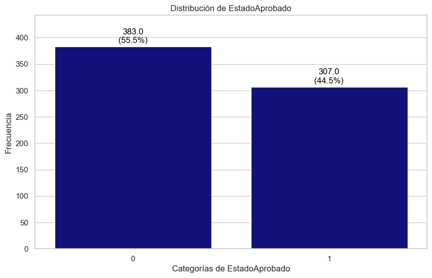
import matplotlib.pyplot as plt
import numpy as np
import pandas as pd
import seaborn as sns
import warnings
# 1. Ignorar advertencias de futuras versiones
warnings.filterwarnings('ignore')
# 2. Asegurar que las variables numéricas tengan el tipo de dato correcto en cc_apps_filtrado
columnas_a_graficar = ['Edad', 'Deuda', 'AniosEmpleo', 'PuntajeCrediticio', 'Ingreso']
for col in columnas_a_graficar:
cc_apps_filtrado[col] = pd.to_numeric(cc_apps_filtrado[col], errors='coerce')
# 3. Extraer formalmente las columnas numéricas verificadas de cc_apps_filtrado
numerical_columns = cc_apps_filtrado[columnas_a_graficar].select_dtypes(include=[np.number]).columns
# 4. Ajustar el estilo de Seaborn y el color verde para los gráficos
sns.set_theme(style="whitegrid", font_scale=1.2)
# 5. Bucle para generar las métricas descriptivas y los gráficos en paralelo
for column in numerical_columns:
# --- CÁLCULO DE MÉTRICAS ESTADÍSTICAS ---
mean_val = cc_apps_filtrado[column].mean()
std_val = cc_apps_filtrado[column].std()
median_val = cc_apps_filtrado[column].median()
min_val = cc_apps_filtrado[column].min()
max_val = cc_apps_filtrado[column].max()
# Calcular el Rango Intercuartílico (IQR)
q1 = cc_apps_filtrado[column].quantile(0.25)
q3 = cc_apps_filtrado[column].quantile(0.75)
iqr_val = q3 - q1
# Momentos de la distribución
skewness = cc_apps_filtrado[column].skew()
kurt = cc_apps_filtrado[column].kurtosis()
# --- REPORTE EN CONSOLA ---
print("=" * 60)
print(f"📊 ANÁLISIS DESCRIPTIVO COMPLETO: {column.upper()}")
print("=" * 60)
print(f" • Promedio (Media): {round(mean_val, 2)}")
print(f" • Desviación Estándar: {round(std_val, 2)}")
print(f" • Mediana (Q2): {round(median_val, 2)}")
print(f" • Rango Intercuartílico: {round(iqr_val, 2)} (Q1: {round(q1, 2)} | Q3: {round(q3, 2)})")
print(f" • Rango Absoluto: [{round(min_val, 2)} - {round(max_val, 2)}]")
print(f" • Asimetría (Skew): {round(skewness, 2)}")
print(f" • Curtosis: {round(kurt, 2)}")
# Breve diagnóstico analítico basado en las métricas
if skewness > 1:
print(f"💡 Diagnóstico: Alta distribución sesgada a la derecha. El promedio ({round(mean_val, 2)}) "
f"es empujado por outliers por encima de la mediana ({round(median_val, 2)}).")
print("-" * 60)
# --- GENERACIÓN DE GRÁFICOS ---
plt.figure(figsize=(14, 5))
# Subplot 1: Histograma con KDE (curva de densidad)
plt.subplot(1, 2, 1)
sns.histplot(cc_apps_filtrado[column], kde=True, color='green', bins=30)
# Línea vertical para el Promedio (Rojo) y Mediana (Azul)
plt.axvline(mean_val, color='red', linestyle='--', linewidth=2, label=f'Promedio: {round(mean_val, 1)}')
plt.axvline(median_val, color='blue', linestyle='-', linewidth=2, label=f'Mediana: {round(median_val, 1)}')
plt.title(f'Histograma y Densidad de {column}', fontsize=14, pad=10)
plt.xlabel(column, fontsize=12)
plt.ylabel('Frecuencia', fontsize=12)
plt.legend()
# Subplot 2: Diagrama de cajas (Boxplot)
plt.subplot(1, 2, 2)
sns.boxplot(x=cc_apps_filtrado[column], color='green', flierprops={"markerfacecolor": "red", "marker": "o"})
plt.title(f'Diagrama de Cajas (Outliers) de {column}', fontsize=14, pad=10)
plt.xlabel(column, fontsize=12)
# Mostrar la figura en pantalla
plt.tight_layout()
plt.show()
============================================================
📊 ANÁLISIS DESCRIPTIVO COMPLETO: EDAD
============================================================
• Promedio (Media): 31.57
• Desviación Estándar: 11.96
• Mediana (Q2): 28.46
• Rango Intercuartílico: 15.63 (Q1: 22.6 | Q3: 38.23)
• Rango Absoluto: [13.75 - 80.25]
• Asimetría (Skew): 1.15
• Curtosis: 1.12
💡 Diagnóstico: Alta distribución sesgada a la derecha. El promedio (31.57) es empujado por outliers por encima de la mediana (28.46).
------------------------------------------------------------

============================================================
📊 ANÁLISIS DESCRIPTIVO COMPLETO: DEUDA
============================================================
• Promedio (Media): 4.76
• Desviación Estándar: 4.98
• Mediana (Q2): 2.75
• Rango Intercuartílico: 6.21 (Q1: 1.0 | Q3: 7.21)
• Rango Absoluto: [0.0 - 28.0]
• Asimetría (Skew): 1.49
• Curtosis: 2.27
💡 Diagnóstico: Alta distribución sesgada a la derecha. El promedio (4.76) es empujado por outliers por encima de la mediana (2.75).
------------------------------------------------------------

============================================================
📊 ANÁLISIS DESCRIPTIVO COMPLETO: ANIOSEMPLEO
============================================================
• Promedio (Media): 2.22
• Desviación Estándar: 3.35
• Mediana (Q2): 1.0
• Rango Intercuartílico: 2.46 (Q1: 0.16 | Q3: 2.62)
• Rango Absoluto: [0.0 - 28.5]
• Asimetría (Skew): 2.89
• Curtosis: 11.2
💡 Diagnóstico: Alta distribución sesgada a la derecha. El promedio (2.22) es empujado por outliers por encima de la mediana (1.0).
------------------------------------------------------------

============================================================
📊 ANÁLISIS DESCRIPTIVO COMPLETO: PUNTAJECREDITICIO
============================================================
• Promedio (Media): 2.4
• Desviación Estándar: 4.86
• Mediana (Q2): 0.0
• Rango Intercuartílico: 3.0 (Q1: 0.0 | Q3: 3.0)
• Rango Absoluto: [0 - 67]
• Asimetría (Skew): 5.15
• Curtosis: 50.83
💡 Diagnóstico: Alta distribución sesgada a la derecha. El promedio (2.4) es empujado por outliers por encima de la mediana (0.0).
------------------------------------------------------------

============================================================
📊 ANÁLISIS DESCRIPTIVO COMPLETO: INGRESO
============================================================
• Promedio (Media): 1017.39
• Desviación Estándar: 5210.1
• Mediana (Q2): 5.0
• Rango Intercuartílico: 395.5 (Q1: 0.0 | Q3: 395.5)
• Rango Absoluto: [0 - 100000]
• Asimetría (Skew): 13.14
• Curtosis: 214.67
💡 Diagnóstico: Alta distribución sesgada a la derecha. El promedio (1017.39) es empujado por outliers por encima de la mediana (5.0).
------------------------------------------------------------

import matplotlib.pyplot as plt
import numpy as np
import pandas as pd
import seaborn as sns
import warnings
# 1. Ignorar advertencias de futuras versiones
warnings.filterwarnings('ignore')
# 2. Identificar automáticamente las columnas categóricas en cc_apps_filtrado
col_categoricas_todas = cc_apps_filtrado.select_dtypes(include=['object', 'category']).columns.tolist()
# 3. Filtrado explícito: Nos quedamos estrictamente con las variables independientes
variables_independientes_cat = [col for col in col_categoricas_todas if col != 'EstadoAprobado']
# 4. Ajustar el estilo de Seaborn y configurar la escala de la fuente
sns.set_theme(style="whitegrid", font_scale=1.2)
# 5. Bucle para generar las tablas y gráficos sin NaNs
for column in variables_independientes_cat:
# --- FILTRADO DE DATOS (Eliminar filas con NaN en la columna actual para este análisis) ---
df_sin_na = cc_apps_filtrado[[column]].dropna()
# Si por alguna razón la columna queda vacía, saltamos a la siguiente
if df_sin_na.empty:
continue
# --- CÁLCULO DE FRECUENCIAS (Con dropna=True explícito) ---
conteo_absoluto = df_sin_na[column].value_counts(dropna=True)
conteo_relativo = df_sin_na[column].value_counts(normalize=True, dropna=True) * 100
# Construcción de la tabla de frecuencias descriptiva limpia
reporte_frecuencias = pd.DataFrame({
'Frecuencia Absoluta': conteo_absoluto,
'Porcentaje (%)': conteo_relativo.round(2)
})
print("=" * 60)
print(f"VARIABLE INDEPENDIENTE CATEGÓRICA (SIN NULOS): {column.upper()}")
print("=" * 60)
print(reporte_frecuencias)
print("-" * 60)
# --- GENERACIÓN DEL DIAGRAMA DE BARRAS LIMPIO ---
plt.figure(figsize=(10, 5))
# Graficamos usando el set de datos filtrado y ordenado de mayor a menor frecuencia
ax = sns.countplot(
data=df_sin_na,
x=column,
color='green',
order=conteo_absoluto.index
)
# Añadir las etiquetas numéricas y porcentajes arriba de cada barra sin contar los NaNs en el total
total_filas_limpias = len(df_sin_na)
for p in ax.patches:
altura = p.get_height()
if not np.isnan(altura) and altura > 0:
porcentaje = f'{round((altura / total_filas_limpias) * 100, 1)}%'
ax.annotate(
f'{int(altura)}\n({porcentaje})',
(p.get_x() + p.get_width() / 2., altura),
ha='center',
va='center',
xytext=(0, 12),
textcoords='offset points',
fontsize=11
)
plt.title(f'Distribución Limpia de la Variable Predictora: {column}', fontsize=14, pad=15)
plt.xlabel(column, fontsize=12)
plt.ylabel('Cantidad de Registros', fontsize=12)
# Holgura en el eje Y para evitar cortes
plt.ylim(0, conteo_absoluto.max() * 1.15)
# Desplegar gráfico
plt.tight_layout()
plt.show()
============================================================
📊 VARIABLE INDEPENDIENTE CATEGÓRICA (SIN NULOS): SEXO
============================================================
Frecuencia Absoluta Porcentaje (%)
Sexo
b 468 69.03
a 210 30.97
------------------------------------------------------------
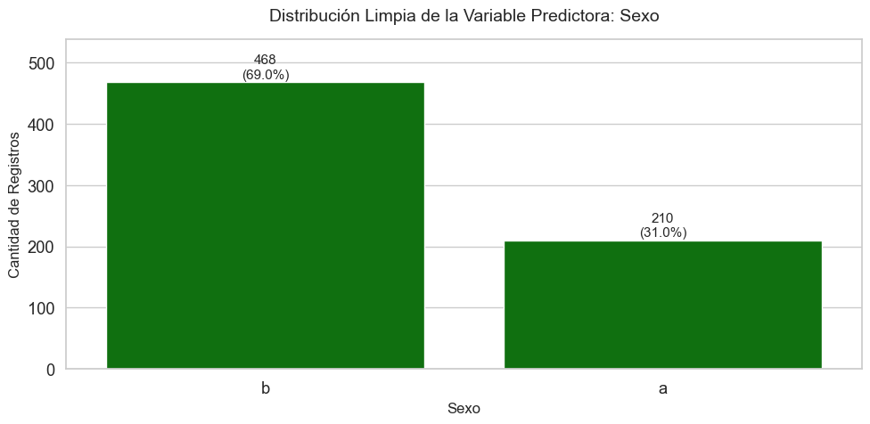
============================================================
📊 VARIABLE INDEPENDIENTE CATEGÓRICA (SIN NULOS): CASADO
============================================================
Frecuencia Absoluta Porcentaje (%)
Casado
u 519 75.88
y 163 23.83
l 2 0.29
------------------------------------------------------------
============================================================
📊 VARIABLE INDEPENDIENTE CATEGÓRICA (SIN NULOS): CLIENTEBANCARIO
============================================================
Frecuencia Absoluta Porcentaje (%)
ClienteBancario
g 519 75.88
p 163 23.83
gg 2 0.29
------------------------------------------------------------
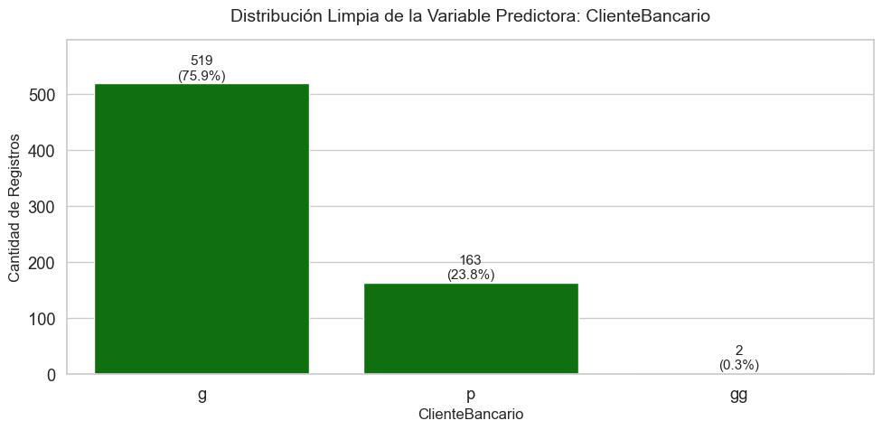
============================================================
📊 VARIABLE INDEPENDIENTE CATEGÓRICA (SIN NULOS): EDUCACION
============================================================
Frecuencia Absoluta Porcentaje (%)
Educacion
c 137 20.12
q 78 11.45
w 64 9.40
i 59 8.66
aa 54 7.93
ff 53 7.78
k 51 7.49
cc 41 6.02
m 38 5.58
x 38 5.58
d 30 4.41
e 25 3.67
j 10 1.47
r 3 0.44
------------------------------------------------------------
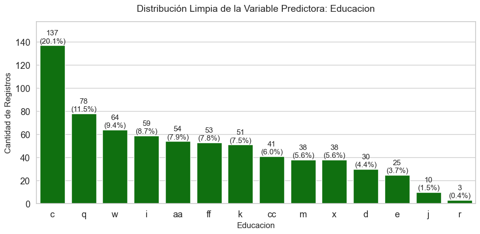
============================================================
📊 VARIABLE INDEPENDIENTE CATEGÓRICA (SIN NULOS): ETNICIDAD
============================================================
Frecuencia Absoluta Porcentaje (%)
Etnicidad
v 399 58.59
h 138 20.26
bb 59 8.66
ff 57 8.37
j 8 1.17
z 8 1.17
dd 6 0.88
n 4 0.59
o 2 0.29
------------------------------------------------------------
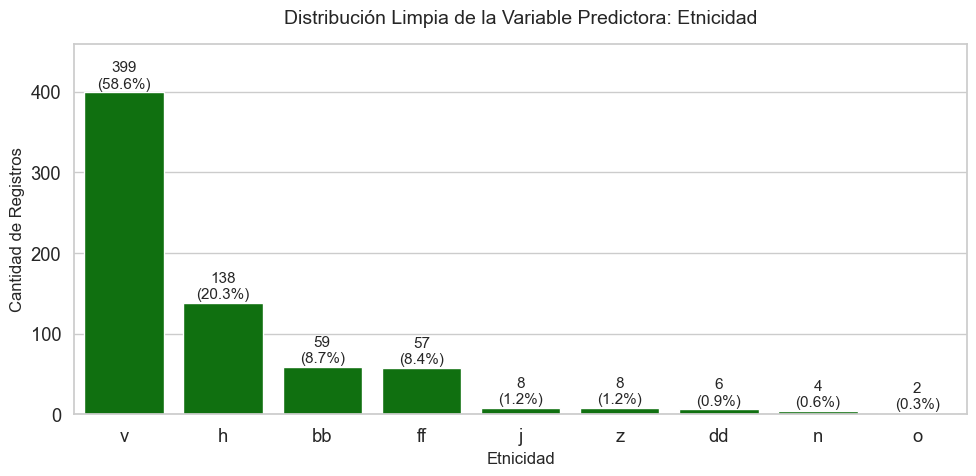
============================================================
📊 VARIABLE INDEPENDIENTE CATEGÓRICA (SIN NULOS): DEUDAANTERIOR
============================================================
Frecuencia Absoluta Porcentaje (%)
DeudaAnterior
t 361 52.32
f 329 47.68
------------------------------------------------------------
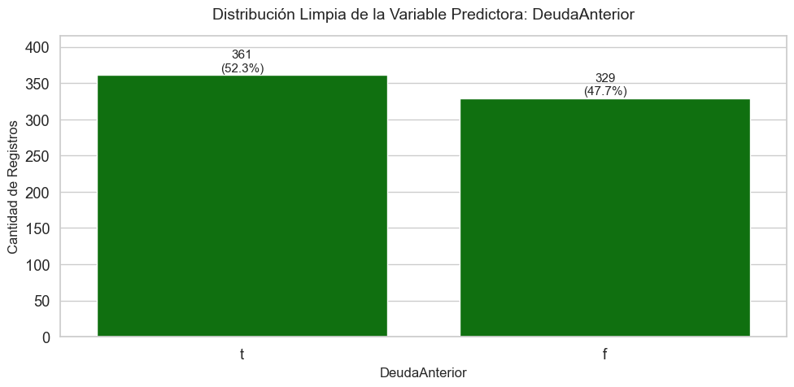
============================================================
📊 VARIABLE INDEPENDIENTE CATEGÓRICA (SIN NULOS): EMPLEADO
============================================================
Frecuencia Absoluta Porcentaje (%)
Empleado
f 395 57.25
t 295 42.75
------------------------------------------------------------
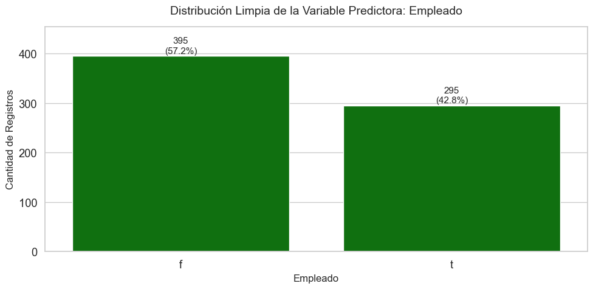
============================================================
📊 VARIABLE INDEPENDIENTE CATEGÓRICA (SIN NULOS): CIUDADANO
============================================================
Frecuencia Absoluta Porcentaje (%)
Ciudadano
g 625 90.58
s 57 8.26
p 8 1.16
------------------------------------------------------------
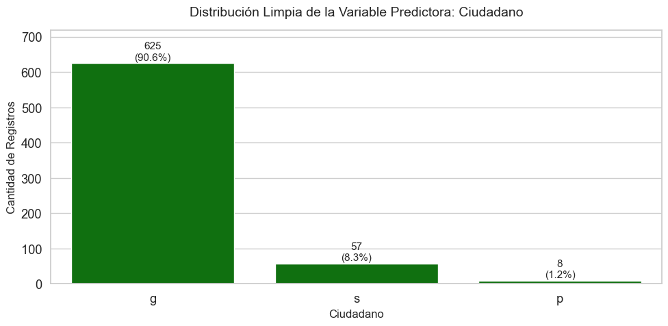
# Agrupamos la categoría ultra-minoritaria 'l' dentro de 'y'
cc_apps_2['Casado'] = cc_apps_2['Casado'].replace('l', 'y')
# Agrupamos la categoría clientebancario 'gg' dentro de 'p'
cc_apps_2['ClienteBancario'] = cc_apps_2['ClienteBancario'].replace('gg', 'p')
# Agrupamos la categoría educacion 'j' dentro de 'r'
cc_apps_2['Educacion'] = cc_apps_2['Educacion'].replace('r', 'j')
# Agrupamos la categoría etnicidad 'o' dentro de 'n'
cc_apps_2['Etnicidad'] = cc_apps_2['Etnicidad'].replace('o', 'n')
# Eliminamos las columnas identificadas como irrelevantes o conflictivas
variables_a_eliminar = ['LicenciaConducir', 'CodigoPostal']
cc_apps_filtrado = cc_apps_2.drop(columns=variables_a_eliminar)
# Separamos características independientes (X) y variable objetivo (y) de la data completa
X_completo = cc_apps_filtrado.drop(columns=['EstadoAprobado'])
y_completo = cc_apps_filtrado['EstadoAprobado']
from sklearn.impute import SimpleImputer
# Habilitamos e importamos el imputador iterativo (MICE)
from sklearn.experimental import enable_iterative_imputer
from sklearn.impute import IterativeImputer
# Identificamos las columnas numéricas y categóricas remanentes
col_numericas = X_completo.select_dtypes(include=[np.number]).columns.tolist()
col_categoricas = X_completo.select_dtypes(include=['object', 'category']).columns.tolist()
# Clonamos el dataset para no sobreescribir destructivamente el original
X_imp = X_completo.copy()
# A. Imputación Iterativa (MICE) para variables numéricas (Ajuste y transformación global)
iterative_imp = IterativeImputer(random_state=42, max_iter=10)
X_imp[col_numericas] = iterative_imp.fit_transform(X_completo[col_numericas])
# B. Imputación por Moda para variables categóricas (Ajuste y transformación global)
categorical_imp = SimpleImputer(strategy='most_frequent')
if len(col_categoricas) > 0:
X_imp[col_categoricas] = categorical_imp.fit_transform(X_completo[col_categoricas])
print("--- CONTROL DE CALIDAD (NULOS RESTANTES) ---")
print(f"Valores nulos en todo el conjunto X después de imputar: {X_imp.isnull().sum().sum()}\n")
--- CONTROL DE CALIDAD (NULOS RESTANTES) ---
Valores nulos en todo el conjunto X después de imputar: 0
from sklearn.preprocessing import OneHotEncoder
if len(col_categoricas) > 0:
# Usamos drop='first' para evitar la trampa de la variable ficticia en modelos lineales/VIF
encoder = OneHotEncoder(drop='first', sparse_output=False, handle_unknown='ignore')
# Ajustamos y transformamos sobre toda la data
X_cat_encoded = encoder.fit_transform(X_imp[col_categoricas])
nombres_cat = encoder.get_feature_names_out(col_categoricas)
X_cat_df = pd.DataFrame(X_cat_encoded, columns=nombres_cat, index=X_imp.index)
# Unificamos numéricas imputadas con categóricas codificadas
X_unificado_vif = pd.concat([X_imp[col_numericas], X_cat_df], axis=1)
else:
X_unificado_vif = X_imp[col_numericas].copy()
from statsmodels.stats.outliers_influence import variance_inflation_factor
X_vif = X_unificado_vif.copy()
X_vif['intercept'] = 1 # statsmodels requiere una constante para calcular el VIF de manera correcta
vif_data = pd.DataFrame()
vif_data["Variable"] = X_vif.columns
vif_data["VIF"] = [variance_inflation_factor(X_vif.values, i) for i in range(X_vif.shape[1])]
# Filtramos la columna 'intercept' y ordenamos los resultados de mayor a menor multicolinealidad
vif_data = vif_data[vif_data["Variable"] != 'intercept'].sort_values(by="VIF", ascending=False)
print("=== REPORTE DE MULTICOLINEALIDAD GLOBAL (VIF) ===")
print(vif_data.to_string(index=False))
=== REPORTE DE MULTICOLINEALIDAD GLOBAL (VIF) ===
Variable VIF
Casado_y inf
ClienteBancario_p inf
Etnicidad_ff 13.476632
Educacion_ff 13.115553
Etnicidad_v 4.615301
Etnicidad_h 3.533706
Educacion_c 3.104150
Educacion_e 2.764233
Educacion_j 2.743179
Etnicidad_j 2.401384
Educacion_i 2.388678
Educacion_q 2.334905
Educacion_w 2.049221
Etnicidad_z 1.922826
Educacion_k 1.892390
Empleado_t 1.822978
Educacion_cc 1.788699
Educacion_m 1.760140
Educacion_x 1.751843
PuntajeCrediticio 1.697117
Etnicidad_dd 1.686168
DeudaAnterior_t 1.568111
Educacion_d 1.547847
AniosEmpleo 1.481476
Edad 1.403676
Etnicidad_n 1.400248
Ingreso 1.312196
Deuda 1.249458
Sexo_b 1.168064
Ciudadano_s 1.163866
Ciudadano_p 1.156594
import numpy as np
import pandas as pd
from sklearn.preprocessing import OneHotEncoder
from sklearn.impute import SimpleImputer
# Obligatorio para poder usar IterativeImputer
from sklearn.experimental import enable_iterative_imputer
from sklearn.impute import IterativeImputer
from statsmodels.stats.outliers_influence import variance_inflation_factor
# 1. CARGA DE DATOS Y ASIGNACIÓN DE COLUMNAS
filename = "C:\\Documentos\\Books_CienciaDatos\\DSTripleA\\docs\\_data\\dataml\\cc_approvals.data"
cc_apps = pd.read_csv(filename, header=None)
cc_apps.columns = ['Sexo', 'Edad', 'Deuda', 'Casado', 'ClienteBancario', 'Educacion',
'Etnicidad', 'AniosEmpleo', 'DeudaAnterior', 'Empleado', 'PuntajeCrediticio',
'LicenciaConducir', 'Ciudadano', 'CodigoPostal', 'Ingreso', 'EstadoAprobado']
# Reemplazar los '?'s con NaN en los conjuntos de datos
cc_apps_2 = cc_apps.replace('?', np.NaN)
# Cambiar la variable Edad que está en objeto por float
cc_apps_2['Edad'] = cc_apps_2['Edad'].astype(float)
# =====================================================================
# INGENIERÍA DE CARACTERÍSTICAS: TUS AGRUPACIONES DE CATEGORÍAS
# =====================================================================
# Agrupamos la categoría ultra-minoritaria 'l' dentro de 'y'
cc_apps_2['Casado'] = cc_apps_2['Casado'].replace('l', 'y')
# Agrupamos la categoría clientebancario 'gg' dentro de 'p'
cc_apps_2['ClienteBancario'] = cc_apps_2['ClienteBancario'].replace('gg', 'p')
# Agrupamos la categoría educacion 'j' dentro de 'r' (Corregido el orden del replace si 'r' era minoritaria)
cc_apps_2['Educacion'] = cc_apps_2['Educacion'].replace('r', 'j')
# Agrupamos la categoría etnicidad 'o' dentro de 'n'
cc_apps_2['Etnicidad'] = cc_apps_2['Etnicidad'].replace('o', 'n')
# =====================================================================
# SELECCIÓN DEFINITIVA DE CARACTERÍSTICAS (ELIMINANDO MULTICOLINEALIDAD)
# =====================================================================
# Aunque agrupamos arriba, DEBEMOS eliminar ClienteBancario y Etnicidad.
# Su información ya quedó perfectamente representada en Casado y Educacion.
variables_a_eliminar = ['LicenciaConducir', 'CodigoPostal', 'ClienteBancario', 'Etnicidad']
cc_apps_filtrado = cc_apps_2.drop(columns=variables_a_eliminar)
# Mapear la variable objetivo a binario
cc_apps_filtrado['EstadoAprobado'] = cc_apps_filtrado['EstadoAprobado'].map({'+': 1, '-': 0})
# Separamos características independientes (X) y variable objetivo (y)
X_completo = cc_apps_filtrado.drop(columns=['EstadoAprobado'])
y_completo = cc_apps_filtrado['EstadoAprobado']
# Identificamos las columnas numéricas y categóricas remanentes
col_numericas = X_completo.select_dtypes(include=[np.number]).columns.tolist()
col_categoricas = X_completo.select_dtypes(include=['object', 'category']).columns.tolist()
# Clonamos el dataset para la imputación
X_imp = X_completo.copy()
# A. Imputación Iterativa (MICE) para variables numéricas
iterative_imp = IterativeImputer(random_state=42, max_iter=10)
X_imp[col_numericas] = iterative_imp.fit_transform(X_completo[col_numericas])
# B. Imputación por Moda para variables categóricas
categorical_imp = SimpleImputer(strategy='most_frequent')
if len(col_categoricas) > 0:
X_imp[col_categoricas] = categorical_imp.fit_transform(X_completo[col_categoricas])
print("--- CONTROL DE CALIDAD (NULOS RESTANTES) ---")
print(f"Valores nulos en todo el conjunto X después de imputar: {X_imp.isnull().sum().sum()}\n")
# CODIFICACIÓN DUMMY (ONE-HOT ENCODING)
if len(col_categoricas) > 0:
# Usamos drop='first' para evitar la trampa de la variable ficticia
encoder = OneHotEncoder(drop='first', sparse_output=False, handle_unknown='ignore')
# Ajustamos y transformamos sobre toda la data
X_cat_encoded = encoder.fit_transform(X_imp[col_categoricas])
nombres_cat = encoder.get_feature_names_out(col_categoricas)
X_cat_df = pd.DataFrame(X_cat_encoded, columns=nombres_cat, index=X_imp.index)
# Unificamos numéricas imputadas con categóricas codificadas
X_unificado_vif = pd.concat([X_imp[col_numericas], X_cat_df], axis=1)
else:
X_unificado_vif = X_imp[col_numericas].copy()
# CÁLCULO DEL VIF DEFINITIVO
X_vif = X_unificado_vif.copy()
X_vif['intercept'] = 1 # statsmodels requiere una constante para calcular el VIF correctamente
vif_data = pd.DataFrame()
vif_data["Variable"] = X_vif.columns
vif_data["VIF"] = [variance_inflation_factor(X_vif.values, i) for i in range(X_vif.shape[1])]
# Filtrar el intercepto y ordenar los resultados de mayor a menor multicolinealidad
vif_data = vif_data[vif_data["Variable"] != 'intercept'].sort_values(by="VIF", ascending=False)
print("=== REPORTE DE MULTICOLINEALIDAD GLOBAL (VIF) ===")
print(vif_data.to_string(index=False))
--- CONTROL DE CALIDAD (NULOS RESTANTES) ---
Valores nulos en todo el conjunto X después de imputar: 0
=== REPORTE DE MULTICOLINEALIDAD GLOBAL (VIF) ===
Variable VIF
Educacion_c 3.046338
Educacion_q 2.254245
Educacion_w 2.043203
Educacion_ff 2.011248
Educacion_i 1.971505
Educacion_k 1.846553
Empleado_t 1.819992
Educacion_m 1.757788
Educacion_cc 1.718007
PuntajeCrediticio 1.691560
Educacion_x 1.656180
Educacion_d 1.535140
DeudaAnterior_t 1.532605
Educacion_e 1.481861
AniosEmpleo 1.444609
Edad 1.352561
Educacion_j 1.240894
Deuda 1.230173
Ciudadano_s 1.149077
Sexo_b 1.145376
Ciudadano_p 1.141602
Ingreso 1.120583
Casado_y 1.089369
6. Construcción del modelo de regresión logística#
import numpy as np
import pandas as pd
from sklearn.model_selection import train_test_split
# =========================================================================
# 1. CARGA DE DATOS E INGENIERÍA DE CARACTERÍSTICAS
# =========================================================================
filename = "C:\\Documentos\\Books_CienciaDatos\\DSTripleA\\docs\\_data\\dataml\\cc_approvals.data"
cc_apps = pd.read_csv(filename, header=None)
cc_apps.columns = ['Sexo', 'Edad', 'Deuda', 'Casado', 'ClienteBancario', 'Educacion',
'Etnicidad', 'AniosEmpleo', 'DeudaAnterior', 'Empleado', 'PuntajeCrediticio',
'LicenciaConducir', 'Ciudadano', 'CodigoPostal', 'Ingreso', 'EstadoAprobado']
# Reemplazar los '?'s con NaN en los conjuntos de datos
cc_apps_2 = cc_apps.replace('?', np.NaN)
# Cambiar la variable Edad que está en objeto por float
cc_apps_2['Edad'] = cc_apps_2['Edad'].astype(float)
# --- TUS AGRUPACIONES DE INGENIERÍA DE CARACTERÍSTICAS ---
# Agrupamos categorías marginales para dar estabilidad estadística al modelo
cc_apps_2['Casado'] = cc_apps_2['Casado'].replace('l', 'y')
cc_apps_2['ClienteBancario'] = cc_apps_2['ClienteBancario'].replace('gg', 'p')
cc_apps_2['Educacion'] = cc_apps_2['Educacion'].replace('r', 'j')
cc_apps_2['Etnicidad'] = cc_apps_2['Etnicidad'].replace('o', 'n')
# --- SELECCIÓN DE CARACTERÍSTICAS (Basada en el éxito del VIF) ---
# Removemos las variables irrelevantes y las redundantes que causaban multicolinealidad
variables_a_eliminar = ['LicenciaConducir', 'CodigoPostal', 'ClienteBancario', 'Etnicidad']
cc_apps_filtrado = cc_apps_2.drop(columns=variables_a_eliminar)
# Convertimos el target 'EstadoAprobado' en una variable binaria (1 = Aprobado, 0 = Rechazado)
cc_apps_filtrado['EstadoAprobado'] = cc_apps_filtrado['EstadoAprobado'].map({'+': 1, '-': 0})
# Separamos características independientes (X) y variable objetivo (y)
X = cc_apps_filtrado.drop(columns=['EstadoAprobado'])
y = cc_apps_filtrado['EstadoAprobado']
# =========================================================================
# PASO 2: SEPARACIÓN EN ENTRENAMIENTO Y TEST (Train/Test Split)
# =========================================================================
# Hacemos la división antes de imputar o escalar para blindarnos del Data Leakage.
# Usamos 'stratify=y' porque es un problema de clasificación y queremos mantener la proporción del target.
X_train, X_test, y_train, y_test = train_test_split(
X, # Características predictoras puras y optimizadas
y, # Variable objetivo (Aprobación 1/0)
test_size=0.2, # Proporción del 20% reservada para validar el modelo final
shuffle=True, # Mezcla los datos aleatoriamente antes de dividir
stratify=y, # Crucial: Mantiene la proporción de aprobados/rechazados en train y test
random_state=42 # Semilla fija para asegurar la reproducibilidad del pipeline
)
print("--- VERIFICACIÓN DEL SPLIT ESTRATIFICADO ---")
print(f"Tamaño del set de Entrenamiento (X_train): {X_train.shape}")
print(f"Tamaño del set de Prueba (X_test): {X_test.shape}")
print(f"Distribución del Target en Train (%): \n{y_train.value_counts(normalize=True).round(2)}")
print(f"Distribución del Target en Test (%): \n{y_test.value_counts(normalize=True).round(2)}")
--- VERIFICACIÓN DEL SPLIT ESTRATIFICADO ---
Tamaño del set de Entrenamiento (X_train): (552, 11)
Tamaño del set de Prueba (X_test): (138, 11)
Distribución del Target en Train (%):
EstadoAprobado
0 0.55
1 0.45
Name: proportion, dtype: float64
Distribución del Target en Test (%):
EstadoAprobado
0 0.56
1 0.44
Name: proportion, dtype: float64
# =========================================================================
# PASO 3: IMPUTACIÓN DE VALORES FALTANTES (Antes de Codificar)
# =========================================================================
# Identificamos las columnas por su tipo utilizando los conjuntos del split
col_numericas = X_train.select_dtypes(include=[np.number]).columns.tolist()
col_categoricas = X_train.select_dtypes(include=['object', 'category']).columns.tolist()
# Clonamos los datasets para no sobreescribir destructivamente los originales
X_train_imp = X_train.copy()
X_test_imp = X_test.copy()
# --- A. Imputación Iterativa (MICE) para variables numéricas ---
iterative_imp = IterativeImputer(random_state=42, max_iter=10)
# Ajustamos en Train y transformamos ambos conjuntos
X_train_imp[col_numericas] = iterative_imp.fit_transform(X_train[col_numericas])
X_test_imp[col_numericas] = iterative_imp.transform(X_test[col_numericas])
# --- B. Imputación por Moda para variables categóricas ---
categorical_imp = SimpleImputer(strategy='most_frequent')
if len(col_categoricas) > 0:
# Ajustamos en Train y transformamos ambos conjuntos
X_train_imp[col_categoricas] = categorical_imp.fit_transform(X_train[col_categoricas])
X_test_imp[col_categoricas] = categorical_imp.transform(X_test[col_categoricas])
print("--- CONTROL DE CALIDAD (NULOS RESTANTES EN IMPUTACIÓN) ---")
print(f"Valores nulos en X_train_imp después de imputar: {X_train_imp.isnull().sum().sum()}")
print(f"Valores nulos en X_test_imp después de imputar: {X_test_imp.isnull().sum().sum()}\n")
--- CONTROL DE CALIDAD (NULOS RESTANTES EN IMPUTACIÓN) ---
Valores nulos en X_train_imp después de imputar: 0
Valores nulos en X_test_imp después de imputar: 0
# =========================================================================
# PASO 4: CODIFICACIÓN CATEGÓRICA CON ONEHOTENCODER
# =========================================================================
# Inicializamos el codificador con drop='first' para cuidar el VIF
encoder = OneHotEncoder(drop='first', sparse_output=False, handle_unknown='ignore')
# Ajustamos en el Train ya imputado y transformamos ambos conjuntos limpios
X_train_cat = encoder.fit_transform(X_train_imp[col_categoricas])
X_test_cat = encoder.transform(X_test_imp[col_categoricas])
# Extraemos los nombres de las nuevas columnas dummies
nombres_cat = encoder.get_feature_names_out(col_categoricas)
# Concatenamos manteniendo la consistencia de índices usando los DataFrames imputados
X_train_encoded = pd.concat([X_train_imp[col_numericas], pd.DataFrame(X_train_cat, columns=nombres_cat, index=X_train_imp.index)], axis=1)
X_test_encoded = pd.concat([X_test_imp[col_numericas], pd.DataFrame(X_test_cat, columns=nombres_cat, index=X_test_imp.index)], axis=1)
print("--- CONTROL DE CALIDAD FINAL (DATA CODIFICADA E IMPUTADA) ---")
print(f"Dimensiones finales de X_train_encoded: {X_train_encoded.shape}")
print(f"Dimensiones finales de X_test_encoded: {X_test_encoded.shape}")
--- CONTROL DE CALIDAD FINAL (DATA CODIFICADA E IMPUTADA) ---
Dimensiones finales de X_train_encoded: (552, 23)
Dimensiones finales de X_test_encoded: (138, 23)
# Ver las primeras 5 filas del conjunto de entrenamiento transformado
X_train_encoded.head()
| Edad | Deuda | AniosEmpleo | PuntajeCrediticio | Ingreso | Sexo_b | Sexo_nan | Casado_y | Casado_nan | Educacion_c | ... | Educacion_k | Educacion_m | Educacion_q | Educacion_w | Educacion_x | Educacion_nan | DeudaAnterior_t | Empleado_t | Ciudadano_p | Ciudadano_s | |
|---|---|---|---|---|---|---|---|---|---|---|---|---|---|---|---|---|---|---|---|---|---|
| 177 | 26.08 | 8.665 | 1.415 | 0 | 150 | 0.0 | 0.0 | 0.0 | 0.0 | 0.0 | ... | 0.0 | 0.0 | 0.0 | 0.0 | 0.0 | 0.0 | 1.0 | 0.0 | 0.0 | 0.0 |
| 401 | 28.92 | 0.375 | 0.290 | 0 | 140 | 1.0 | 0.0 | 0.0 | 0.0 | 1.0 | ... | 0.0 | 0.0 | 0.0 | 0.0 | 0.0 | 0.0 | 0.0 | 0.0 | 0.0 | 0.0 |
| 375 | 20.83 | 0.500 | 1.000 | 0 | 0 | 0.0 | 0.0 | 1.0 | 0.0 | 0.0 | ... | 0.0 | 0.0 | 0.0 | 0.0 | 0.0 | 0.0 | 0.0 | 0.0 | 0.0 | 0.0 |
| 299 | 22.17 | 12.125 | 3.335 | 2 | 173 | 1.0 | 0.0 | 0.0 | 0.0 | 1.0 | ... | 0.0 | 0.0 | 0.0 | 0.0 | 0.0 | 0.0 | 0.0 | 1.0 | 0.0 | 0.0 |
| 45 | 54.33 | 6.750 | 2.625 | 11 | 284 | 1.0 | 0.0 | 0.0 | 0.0 | 1.0 | ... | 0.0 | 0.0 | 0.0 | 0.0 | 0.0 | 0.0 | 1.0 | 1.0 | 0.0 | 0.0 |
5 rows × 26 columns
# Ver las primeras 5 filas del conjunto de prueba transformado
X_test_encoded.head()
| Edad | Deuda | AniosEmpleo | PuntajeCrediticio | Ingreso | Sexo_b | Sexo_nan | Casado_y | Casado_nan | Educacion_c | ... | Educacion_k | Educacion_m | Educacion_q | Educacion_w | Educacion_x | Educacion_nan | DeudaAnterior_t | Empleado_t | Ciudadano_p | Ciudadano_s | |
|---|---|---|---|---|---|---|---|---|---|---|---|---|---|---|---|---|---|---|---|---|---|
| 53 | 34.92 | 2.500 | 0.000 | 0 | 200 | 1.0 | 0.0 | 0.0 | 0.0 | 0.0 | ... | 0.0 | 0.0 | 0.0 | 1.0 | 0.0 | 0.0 | 1.0 | 0.0 | 0.0 | 0.0 |
| 52 | 37.42 | 2.040 | 0.040 | 0 | 5800 | 1.0 | 0.0 | 0.0 | 0.0 | 0.0 | ... | 0.0 | 0.0 | 0.0 | 1.0 | 0.0 | 0.0 | 1.0 | 0.0 | 0.0 | 0.0 |
| 407 | 19.58 | 0.665 | 1.000 | 1 | 2 | 0.0 | 0.0 | 1.0 | 0.0 | 1.0 | ... | 0.0 | 0.0 | 0.0 | 0.0 | 0.0 | 0.0 | 0.0 | 1.0 | 0.0 | 0.0 |
| 191 | 42.00 | 0.205 | 5.125 | 0 | 0 | 1.0 | 0.0 | 0.0 | 0.0 | 0.0 | ... | 0.0 | 0.0 | 0.0 | 0.0 | 0.0 | 0.0 | 1.0 | 0.0 | 0.0 | 0.0 |
| 492 | 39.25 | 9.500 | 6.500 | 14 | 4607 | 1.0 | 0.0 | 0.0 | 0.0 | 0.0 | ... | 0.0 | 1.0 | 0.0 | 0.0 | 0.0 | 0.0 | 1.0 | 1.0 | 0.0 | 0.0 |
5 rows × 26 columns
from sklearn.preprocessing import StandardScaler
# =========================================================================
# PASO 5: ESTANDARIZACIÓN FINAL (StandardScaler)
# =========================================================================
# Centra las variables a media 0 y varianza 1 para una óptima convergencia de la regresión
scaler = StandardScaler()
# Ajustamos el escalador con el Train codificado y transformamos ambos conjuntos
X_train_scaled = scaler.fit_transform(X_train_encoded)
X_test_scaled = scaler.transform(X_test_encoded)
# Convertir de nuevo a DataFrame manteniendo las columnas y los índices originales
X_train_scaled_df = pd.DataFrame(X_train_scaled, columns=X_train_encoded.columns, index=X_train_encoded.index)
X_test_scaled_df = pd.DataFrame(X_test_scaled, columns=X_test_encoded.columns, index=X_test_encoded.index)
print("--- CONTROL DE CALIDAD: ESTANDARIZACIÓN COMPLETADA ---")
print(f"Media aproximada de las columnas en Train (debe ser ~0): {round(X_train_scaled_df.mean().mean(), 2)}")
print(f"Desviación estándar de las columnas en Train (debe ser ~1): {round(X_train_scaled_df.std().mean(), 2)}\n")
--- CONTROL DE CALIDAD: ESTANDARIZACIÓN COMPLETADA ---
Media aproximada de las columnas en Train (debe ser ~0): -0.0
Desviación estándar de las columnas en Train (debe ser ~1): 1.0
# Desplegar las primeras filas para inspección visual
X_train_scaled_df.head()
| Edad | Deuda | AniosEmpleo | PuntajeCrediticio | Ingreso | Sexo_b | Casado_y | Educacion_c | Educacion_cc | Educacion_d | ... | Educacion_j | Educacion_k | Educacion_m | Educacion_q | Educacion_w | Educacion_x | DeudaAnterior_t | Empleado_t | Ciudadano_p | Ciudadano_s | |
|---|---|---|---|---|---|---|---|---|---|---|---|---|---|---|---|---|---|---|---|---|---|
| 177 | -0.467062 | 0.761172 | -0.225597 | -0.492496 | -0.166000 | -1.511858 | -0.529851 | -0.524239 | -0.248069 | -0.198867 | ... | -0.142593 | -0.275723 | -0.252158 | -0.362143 | -0.312115 | -0.243928 | 0.950499 | -0.886796 | -0.113332 | -0.312115 |
| 401 | -0.224245 | -0.866412 | -0.562094 | -0.492496 | -0.167864 | 0.661438 | -0.529851 | 1.907526 | -0.248069 | -0.198867 | ... | -0.142593 | -0.275723 | -0.252158 | -0.362143 | -0.312115 | -0.243928 | -1.052079 | -0.886796 | -0.113332 | -0.312115 |
| 375 | -0.915932 | -0.841870 | -0.349727 | -0.492496 | -0.193961 | -1.511858 | 1.887322 | -0.524239 | -0.248069 | -0.198867 | ... | -0.142593 | -0.275723 | -0.252158 | -0.362143 | -0.312115 | -0.243928 | -1.052079 | -0.886796 | -0.113332 | -0.312115 |
| 299 | -0.801364 | 1.440477 | 0.348692 | -0.097641 | -0.161713 | 0.661438 | -0.529851 | 1.907526 | -0.248069 | -0.198867 | ... | -0.142593 | -0.275723 | -0.252158 | -0.362143 | -0.312115 | -0.243928 | -1.052079 | 1.127655 | -0.113332 | -0.312115 |
| 45 | 1.948286 | 0.385198 | 0.136325 | 1.679206 | -0.141022 | 0.661438 | -0.529851 | 1.907526 | -0.248069 | -0.198867 | ... | -0.142593 | -0.275723 | -0.252158 | -0.362143 | -0.312115 | -0.243928 | 0.950499 | 1.127655 | -0.113332 | -0.312115 |
5 rows × 23 columns
from sklearn.model_selection import GridSearchCV
from sklearn.metrics import accuracy_score, classification_report, confusion_matrix, roc_auc_score
import numpy as np
import pandas as pd
# =========================================================================
# 1. DEFINICIÓN DEL MODELO Y MALLA DE HIPERPARÁMETROS LIMPIA
# =========================================================================
modelo_base = LogisticRegression(random_state=42, max_iter=2000)
# Diccionario corregido sin prefijos de pipeline y con combinaciones viables
param_grid = {
'C': [0.001, 0.01, 0.1, 1, 10, 100],
'penalty': ['l1', 'l2'],
'solver': ['liblinear', 'saga'], # Estos solvers soportan tanto l1 como l2 nativamente
'class_weight': [None, 'balanced']
}
# =========================================================================
# 2. BÚSQUEDA EN REJILLA CON VALIDACIÓN CRUZADA (GRID SEARCH CV)
# =========================================================================
# Buscamos la combinación que maximice el ROC AUC usando 5 pliegues
grid_search = GridSearchCV(
estimator=modelo_base,
param_grid=param_grid,
scoring='roc_auc',
cv=5,
n_jobs=-1,
verbose=1
)
# Entrenamos la rejilla con los datos de entrenamiento escalados
grid_search.fit(X_train_scaled, y_train)
# Extraemos el mejor modelo entrenado con la mejor combinación de parámetros
mejor_modelo_lr = grid_search.best_estimator_
# Extraemos la desviación estándar del mejor modelo usando su índice ganador
indice_ganador = grid_search.best_index_
desv_estandar_cv = grid_search.cv_results_['std_test_score'][indice_ganador]
# =========================================================================
# 3. PREDICCIONES PARA TRAIN Y TEST (UMBRAL POR DEFECTO 0.50)
# =========================================================================
# Generamos predicciones binarias y probabilidades para el conjunto de ENTRENAMIENTO
y_pred_train = mejor_modelo_lr.predict(X_train_scaled)
y_pred_proba_train = mejor_modelo_lr.predict_proba(X_train_scaled)[:, 1]
# Generamos predicciones binarias y probabilidades para el conjunto de PRUEBA
y_pred_test = mejor_modelo_lr.predict(X_test_scaled)
y_pred_proba_test = mejor_modelo_lr.predict_proba(X_test_scaled)[:, 1]
# Cálculo de métricas para el conjunto de ENTRENAMIENTO
accuracy_train = accuracy_score(y_train, y_pred_train)
roc_auc_train = roc_auc_score(y_train, y_pred_proba_train)
# Cálculo de métricas para el conjunto de PRUEBA
accuracy_test = accuracy_score(y_test, y_pred_test)
roc_auc_test = roc_auc_score(y_test, y_pred_proba_test)
# =========================================================================
# 4. REPORTE COMPLETO DE RENDIMIENTO SANEADO
# =========================================================================
print("\n" + "="*65)
print("=== REPORTE DE OPTIMIZACIÓN DE HIPERPARÁMETROS ===")
print("="*65)
print(f"Mejores Hiperparámetros encontrados:\n{grid_search.best_params_}\n")
print(f"ROC AUC Promedio en CV (Mejor Modelo): {grid_search.best_score_:.4f}")
print(f"Desviación Estándar ROC AUC en CV: {desv_estandar_cv:.4f}\n")
print("-" * 65)
print("📈 RENDIMIENTO EN EL CONJUNTO DE ENTRENAMIENTO (TRAIN)")
print("-" * 65)
print(f"ROC AUC (Conjunto de Entrenamiento): {roc_auc_train:.4f}")
print(f"Exactitud (Accuracy en Entrenamiento): {accuracy_train * 100:.2f}%\n")
print("-" * 65)
print("📉 RENDIMIENTO EN EL CONJUNTO DE PRUEBA (TEST)")
print("-" * 65)
print(f"ROC AUC Final (Conjunto de Prueba): {roc_auc_test:.4f}")
print(f"Exactitud Final (Accuracy en Test): {accuracy_test * 100:.2f}%\n")
print("--- MATRIZ DE CONFUSIÓN (TRAIN) ---")
print(confusion_matrix(y_train, y_pred_train))
print("\n--- MATRIZ DE CONFUSIÓN DE REFERENCIA (TEST - UMBRAL 0.50) ---")
print(confusion_matrix(y_test, y_pred_test))
print("\n--- REPORTE DE CLASIFICACIÓN DETALLADO (TEST) ---")
print(classification_report(y_test, y_pred_test, target_names=['Rechazado (-)', 'Aprobado (+)']))
Fitting 5 folds for each of 48 candidates, totalling 240 fits
=================================================================
=== REPORTE DE OPTIMIZACIÓN DE HIPERPARÁMETROS ===
=================================================================
Mejores Hiperparámetros encontrados:
{'C': 1, 'class_weight': 'balanced', 'penalty': 'l1', 'solver': 'saga'}
ROC AUC Promedio en CV (Mejor Modelo): 0.9192
Desviación Estándar ROC AUC en CV: 0.0224
-----------------------------------------------------------------
📈 RENDIMIENTO EN EL CONJUNTO DE ENTRENAMIENTO (TRAIN)
-----------------------------------------------------------------
ROC AUC (Conjunto de Entrenamiento): 0.9347
Exactitud (Accuracy en Entrenamiento): 86.96%
-----------------------------------------------------------------
📉 RENDIMIENTO EN EL CONJUNTO DE PRUEBA (TEST)
-----------------------------------------------------------------
ROC AUC Final (Conjunto de Prueba): 0.9581
Exactitud Final (Accuracy en Test): 86.96%
--- MATRIZ DE CONFUSIÓN (TRAIN) ---
[[257 49]
[ 23 223]]
--- MATRIZ DE CONFUSIÓN DE REFERENCIA (TEST - UMBRAL 0.50) ---
[[67 10]
[ 8 53]]
--- REPORTE DE CLASIFICACIÓN DETALLADO (TEST) ---
precision recall f1-score support
Rechazado (-) 0.89 0.87 0.88 77
Aprobado (+) 0.84 0.87 0.85 61
accuracy 0.87 138
macro avg 0.87 0.87 0.87 138
weighted avg 0.87 0.87 0.87 138
# Graficar la curva ROC para el train
fpr, tpr, thresholds = roc_curve(y_train, y_pred_proba_train)
roc_auc = auc(fpr, tpr)
plt.figure()
plt.plot(fpr, tpr, color='darkorange', lw=2, label='Curva ROC (área = %0.2f)' % roc_auc)
plt.plot([0, 1], [0, 1], color='navy', lw=2, linestyle='--')
plt.xlim([0.0, 1.0])
plt.ylim([0.0, 1.05])
plt.xlabel('Tasa de Falsos Positivos')
plt.ylabel('Tasa de Verdaderos Positivos')
plt.title('Curva ROC del conjunto train')
plt.legend(loc="lower right")
plt.show()

# Graficar la curva ROC para el test
fpr, tpr, thresholds = roc_curve(y_test, y_pred_proba_test)
roc_auc = auc(fpr, tpr)
plt.figure()
plt.plot(fpr, tpr, color='darkorange', lw=2, label='Curva ROC (área = %0.2f)' % roc_auc)
plt.plot([0, 1], [0, 1], color='navy', lw=2, linestyle='--')
plt.xlim([0.0, 1.0])
plt.ylim([0.0, 1.05])
plt.xlabel('Tasa de Falsos Positivos')
plt.ylabel('Tasa de Verdaderos Positivos')
plt.title('Curva ROC del conjunto test')
plt.legend(loc="lower right")
plt.show()

import numpy as np
import pandas as pd
from sklearn.compose import ColumnTransformer
from sklearn.experimental import enable_iterative_imputer
from sklearn.impute import IterativeImputer, SimpleImputer
from sklearn.linear_model import LogisticRegression
from sklearn.metrics import (
accuracy_score,
classification_report,
confusion_matrix,
f1_score,
recall_score,
roc_auc_score,
)
from sklearn.model_selection import GridSearchCV, train_test_split
from sklearn.pipeline import make_pipeline
from sklearn.preprocessing import OneHotEncoder, StandardScaler
# =========================================================================
# 1. CARGA DE DATA E INGENIERÍA DE CARACTERÍSTICAS
# =========================================================================
filename = "C:\\Documentos\\Books_CienciaDatos\\DSTripleA\\docs\\_data\\dataml\\cc_approvals.data"
cc_apps = pd.read_csv(filename, header=None)
cc_apps.columns = [
'Sexo',
'Edad',
'Deuda',
'Casado',
'ClienteBancario',
'Educacion',
'Etnicidad',
'AniosEmpleo',
'DeudaAnterior',
'Empleado',
'PuntajeCrediticio',
'LicenciaConducir',
'Ciudadano',
'CodigoPostal',
'Ingreso',
'EstadoAprobado',
]
# Reemplazar los '?'s con NaN en los conjuntos de datos
cc_apps_2 = cc_apps.replace('?', np.NaN)
# Cambiar la variable Edad que está en objeto por float
cc_apps_2['Edad'] = cc_apps_2['Edad'].astype(float)
# --- TUS AGRUPACIONES DE INGENIERÍA DE CARACTERÍSTICAS ---
cc_apps_2['Casado'] = cc_apps_2['Casado'].replace('l', 'y')
cc_apps_2['ClienteBancario'] = cc_apps_2['ClienteBancario'].replace('gg', 'p')
cc_apps_2['Educacion'] = cc_apps_2['Educacion'].replace('r', 'j')
cc_apps_2['Etnicidad'] = cc_apps_2['Etnicidad'].replace('o', 'n')
# --- SELECCIÓN DE CARACTERÍSTICAS (Basada en el éxito del VIF) ---
variables_a_eliminar = [
'LicenciaConducir',
'CodigoPostal',
'ClienteBancario',
'Etnicidad',
]
cc_apps_filtrado = cc_apps_2.drop(columns=variables_a_eliminar)
# Convertimos el target a binario
cc_apps_filtrado['EstadoAprobado'] = cc_apps_filtrado['EstadoAprobado'].map(
{'+': 1, '-': 0}
)
# Separamos características independientes (X) y variable objetivo (y)
X = cc_apps_filtrado.drop(columns=['EstadoAprobado'])
y = cc_apps_filtrado['EstadoAprobado']
# Dividimos en Train y Test usando estratificación para mantener la proporción del target
X_train, X_test, y_train, y_test = train_test_split(
X, y, test_size=0.2, shuffle=True, stratify=y, random_state=42
)
# Identificamos las columnas por su tipo para alimentar el preprocesador del pipeline
col_categoricas = (
X_train.select_dtypes(include=['object', 'category']).columns.tolist()
)
col_numericas = X_train.select_dtypes(include=[np.number]).columns.tolist()
# =========================================================================
# 2. CONSTRUCCIÓN DEL PIPELINE COMPLETO MEDIANTE MAKE_PIPELINE
# =========================================================================
# Diseñamos el preprocesador: imputamos nulos categóricos por la Moda y aplicamos One-Hot Encoding
# Nota: Como las categóricas tienen nulos, metemos un mini-pipeline interno para ellas
preprocesador_cat = make_pipeline(
SimpleImputer(strategy='most_frequent'),
OneHotEncoder(drop='first', sparse_output=False, handle_unknown='ignore'),
)
preprocesador_global = ColumnTransformer(
transformers=[('cat', preprocesador_cat, col_categoricas)],
remainder='passthrough', # Mantiene las columnas numéricas con sus nulos intactos para el IterativeImputer
)
# Creamos el pipeline unificado con los pasos secuenciales e inicializamos el modelo base
pipeline_lr = make_pipeline(
preprocesador_global,
IterativeImputer(
random_state=42, max_iter=10
), # Imputación MICE sobre la matriz unificada resultante
StandardScaler(), # Estandarización final (media 0, varianza 1)
LogisticRegression(
random_state=42, max_iter=2000
), # Nuestro clasificador final de riesgo
)
# Malla de hiperparámetros adaptada con el prefijo correcto generado por make_pipeline
param_grid = {
'logisticregression__C': [0.001, 0.01, 0.1, 1, 10, 100],
'logisticregression__penalty': ['l1', 'l2'],
'logisticregression__solver': ['liblinear', 'saga'],
'logisticregression__class_weight': [None, 'balanced'],
}
# =========================================================================
# 3. BÚSQUEDA EN REJILLA CON VALIDACIÓN CRUZADA (GRID SEARCH CV)
# =========================================================================
# Evaluamos de forma segura la estabilidad y rendimiento usando el Pipeline en Grid Search
grid_search_lr = GridSearchCV(
estimator=pipeline_lr,
param_grid=param_grid,
scoring='roc_auc',
cv=5,
n_jobs=-1,
verbose=1,
)
# Entrenamos la rejilla directamente pasando los conjuntos de datos originales crudos
grid_search_lr.fit(X_train, y_train)
# Extraemos el mejor pipeline ganador completo
mejor_pipeline = grid_search_lr.best_estimator_
# Extraemos la desviación estándar del proceso de CV usando el índice ganador
indice_ganador = grid_search_lr.best_index_
desv_estandar_cv = grid_search_lr.cv_results_['std_test_score'][indice_ganador]
# =========================================================================
# 4. EVALUACIÓN UTILIZANDO EL PIPELINE EN TRAIN Y TEST (UMBRAL 0.50)
# =========================================================================
# --- Evaluación en el conjunto de Entrenamiento (Train) ---
y_pred_train = mejor_pipeline.predict(X_train)
y_pred_proba_train = mejor_pipeline.predict_proba(X_train)[:, 1]
roc_auc_train = roc_auc_score(y_train, y_pred_proba_train)
accuracy_train = accuracy_score(y_train, y_pred_train)
recall_train = recall_score(y_train, y_pred_train)
f1_train = f1_score(y_train, y_pred_train)
# --- Evaluación en el conjunto de Prueba (Test) ---
y_pred_test = mejor_pipeline.predict(X_test)
y_pred_proba_test = mejor_pipeline.predict_proba(X_test)[:, 1]
roc_auc_test = roc_auc_score(y_test, y_pred_proba_test)
accuracy_test = accuracy_score(y_test, y_pred_test)
recall_test = recall_score(y_test, y_pred_test)
f1_test = f1_score(y_test, y_pred_test)
# =========================================================================
# 5. REPORTE COMPARATIVO DE CONSOLA
# =========================================================================
print("\n" + "=" * 65)
print("=== REPORTE DEL PIPELINE COMPLETO DE CLASIFICACIÓN ===")
print("=" * 65)
print(f"Mejores Hiperparámetros encontrados:\n{grid_search_lr.best_params_}\n")
print(
f"ROC AUC Promedio (Validación Cruzada): {grid_search_lr.best_score_:.4f}"
)
print(f"Desviación ROC AUC (Validación Cruzada): ±{desv_estandar_cv:.4f}\n")
print("-" * 65)
print("📈 RENDIMIENTO EN EL CONJUNTO DE ENTRENAMIENTO (TRAIN)")
print("-" * 65)
print(f"ROC AUC (Train): {roc_auc_train:.4f}")
print(f"Exactitud (Accuracy en Train): {accuracy_train * 100:.2f}%")
print(f"Recall (Sensibilidad en Train): {recall_train * 100:.2f}%")
print(f"F1-Score (Métrica F1 en Train): {f1_train * 100:.2f}%\n")
print("-" * 65)
print("📉 RENDIMIENTO EN EL CONJUNTO DE PRUEBA (TEST)")
print("-" * 65)
print(f"ROC AUC Final (Test): {roc_auc_test:.4f}")
print(f"Exactitud Final (Accuracy en Test): {accuracy_test * 100:.2f}%")
print(f"Recall Final (Sensibilidad en Test): {recall_test * 100:.2f}%")
print(f"F1-Score Final (Métrica F1 en Test): {f1_test * 100:.2f}%\n")
print("--- MATRIZ DE CONFUSIÓN (TRAIN) ---")
print(confusion_matrix(y_train, y_pred_train))
print("\n--- MATRIZ DE CONFUSIÓN DE REFERENCIA (TEST - UMBRAL 0.50) ---")
print(confusion_matrix(y_test, y_pred_test))
print("\n--- REPORTE DE CLASIFICACIÓN DETALLADO (TEST) ---")
print(
classification_report(
y_test, y_pred_test, target_names=['Rechazado (-)', 'Aprobado (+)']
)
)
Fitting 5 folds for each of 48 candidates, totalling 240 fits
=================================================================
=== REPORTE DEL PIPELINE COMPLETO DE CLASIFICACIÓN ===
=================================================================
Mejores Hiperparámetros encontrados:
{'logisticregression__C': 1, 'logisticregression__class_weight': 'balanced', 'logisticregression__penalty': 'l1', 'logisticregression__solver': 'saga'}
ROC AUC Promedio (Validación Cruzada): 0.9191
Desviación ROC AUC (Validación Cruzada): ±0.0228
-----------------------------------------------------------------
📈 RENDIMIENTO EN EL CONJUNTO DE ENTRENAMIENTO (TRAIN)
-----------------------------------------------------------------
ROC AUC (Train): 0.9347
Exactitud (Accuracy en Train): 87.14%
Recall (Sensibilidad en Train): 91.06%
F1-Score (Métrica F1 en Train): 86.32%
-----------------------------------------------------------------
📉 RENDIMIENTO EN EL CONJUNTO DE PRUEBA (TEST)
-----------------------------------------------------------------
ROC AUC Final (Test): 0.9583
Exactitud Final (Accuracy en Test): 86.96%
Recall Final (Sensibilidad en Test): 86.89%
F1-Score Final (Métrica F1 en Test): 85.48%
--- MATRIZ DE CONFUSIÓN (TRAIN) ---
[[257 49]
[ 22 224]]
--- MATRIZ DE CONFUSIÓN DE REFERENCIA (TEST - UMBRAL 0.50) ---
[[67 10]
[ 8 53]]
--- REPORTE DE CLASIFICACIÓN DETALLADO (TEST) ---
precision recall f1-score support
Rechazado (-) 0.89 0.87 0.88 77
Aprobado (+) 0.84 0.87 0.85 61
accuracy 0.87 138
macro avg 0.87 0.87 0.87 138
weighted avg 0.87 0.87 0.87 138
Modelo de clasificación de KNN#
from sklearn.neighbors import KNeighborsClassifier
# Creamos el pipeline unificado con KNeighborsClassifier final
# Nota: Para KNN, el StandardScaler es un paso de vida o muerte, ya que se basa en distancias métricas.
pipeline_knn = make_pipeline(
preprocesador_global,
IterativeImputer(random_state=42, max_iter=10),
StandardScaler(),
KNeighborsClassifier()
)
# Malla de hiperparámetros oficial para KNN usando make_pipeline
param_grid = {
'kneighborsclassifier__n_neighbors': range(1, 25),
'kneighborsclassifier__weights': ['uniform', 'distance'],
'kneighborsclassifier__metric': ['euclidean', 'manhattan', 'minkowski'],
'kneighborsclassifier__leaf_size': [30, 40, 50, 60]
}
# =========================================================================
# 3. BÚSQUEDA EN REJILLA CON VALIDACIÓN CRUZADA (GRID SEARCH CV)
# =========================================================================
grid_search_knn = GridSearchCV(
estimator=pipeline_knn,
param_grid=param_grid,
scoring='roc_auc',
cv=5,
n_jobs=-1,
verbose=1
)
# Entrenamos la rejilla con la data cruda
grid_search_knn.fit(X_train, y_train)
# Extraemos el mejor pipeline ganador completo
mejor_pipeline_knn = grid_search_knn.best_estimator_
# Extraemos la desviación estándar del proceso de CV usando el índice ganador
indice_ganador = grid_search_knn.best_index_
desv_estandar_cv = grid_search_knn.cv_results_['std_test_score'][indice_ganador]
# =========================================================================
# 4. EVALUACIÓN UTILIZANDO EL PIPELINE EN TRAIN Y TEST (UMBRAL 0.50)
# =========================================================================
# --- Evaluación en el conjunto de Entrenamiento (Train) ---
y_pred_train = mejor_pipeline_knn.predict(X_train)
y_pred_proba_train = mejor_pipeline_knn.predict_proba(X_train)[:, 1]
roc_auc_train = roc_auc_score(y_train, y_pred_proba_train)
accuracy_train = accuracy_score(y_train, y_pred_train)
recall_train = recall_score(y_train, y_pred_train)
f1_train = f1_score(y_train, y_pred_train)
# --- Evaluación en el conjunto de Prueba (Test) ---
y_pred_test = mejor_pipeline_knn.predict(X_test)
y_pred_proba_test = mejor_pipeline_knn.predict_proba(X_test)[:, 1]
roc_auc_test = roc_auc_score(y_test, y_pred_proba_test)
accuracy_test = accuracy_score(y_test, y_pred_test)
recall_test = recall_score(y_test, y_pred_test)
f1_test = f1_score(y_test, y_pred_test)
# =========================================================================
# 5. REPORTE COMPARATIVO DE CONSOLA
# =========================================================================
print("\n" + "=" * 65)
print("=== REPORTE DEL PIPELINE COMPLETO DE CLASIFICACIÓN (KNN) ===")
print("=" * 65)
print(f"Mejores Hiperparámetros encontrados:\n{grid_search_knn.best_params_}\n")
print(f"ROC AUC Promedio (Validación Cruzada): {grid_search_knn.best_score_:.4f}")
print(f"Desviación ROC AUC (Validación Cruzada): ±{desv_estandar_cv:.4f}\n")
print("-" * 65)
print("📈 RENDIMIENTO EN EL CONJUNTO DE ENTRENAMIENTO (TRAIN)")
print("-" * 65)
print(f"ROC AUC (Train): {roc_auc_train:.4f}")
print(f"Exactitud (Accuracy en Train): {accuracy_train * 100:.2f}%")
print(f"Recall (Sensibilidad en Train): {recall_train * 100:.2f}%")
print(f"F1-Score (Métrica F1 en Train): {f1_train * 100:.2f}%\n")
print("-" * 65)
print("📉 RENDIMIENTO EN EL CONJUNTO DE PRUEBA (TEST)")
print("-" * 65)
print(f"ROC AUC Final (Test): {roc_auc_test:.4f}")
print(f"Exactitud Final (Accuracy en Test): {accuracy_test * 100:.2f}%")
print(f"Recall Final (Sensibilidad en Test): {recall_test * 100:.2f}%")
print(f"F1-Score Final (Métrica F1 en Test): {f1_test * 100:.2f}%\n")
print("--- MATRIZ DE CONFUSIÓN (TRAIN) ---")
print(confusion_matrix(y_train, y_pred_train))
print("\n--- MATRIZ DE CONFUSIÓN DE REFERENCIA (TEST - UMBRAL 0.50) ---")
print(confusion_matrix(y_test, y_pred_test))
print("\n--- REPORTE DE CLASIFICACIÓN DETALLADO (TEST) ---")
print(classification_report(y_test, y_pred_test, target_names=['Rechazado (-)', 'Aprobado (+)']))
Fitting 5 folds for each of 576 candidates, totalling 2880 fits
=================================================================
=== REPORTE DEL PIPELINE COMPLETO DE CLASIFICACIÓN (KNN) ===
=================================================================
Mejores Hiperparámetros encontrados:
{'kneighborsclassifier__leaf_size': 30, 'kneighborsclassifier__metric': 'manhattan', 'kneighborsclassifier__n_neighbors': 23, 'kneighborsclassifier__weights': 'distance'}
ROC AUC Promedio (Validación Cruzada): 0.9032
Desviación ROC AUC (Validación Cruzada): ±0.0318
-----------------------------------------------------------------
📈 RENDIMIENTO EN EL CONJUNTO DE ENTRENAMIENTO (TRAIN)
-----------------------------------------------------------------
ROC AUC (Train): 1.0000
Exactitud (Accuracy en Train): 100.00%
Recall (Sensibilidad en Train): 100.00%
F1-Score (Métrica F1 en Train): 100.00%
-----------------------------------------------------------------
📉 RENDIMIENTO EN EL CONJUNTO DE PRUEBA (TEST)
-----------------------------------------------------------------
ROC AUC Final (Test): 0.9251
Exactitud Final (Accuracy en Test): 86.23%
Recall Final (Sensibilidad en Test): 70.49%
F1-Score Final (Métrica F1 en Test): 81.90%
--- MATRIZ DE CONFUSIÓN (TRAIN) ---
[[306 0]
[ 0 246]]
--- MATRIZ DE CONFUSIÓN DE REFERENCIA (TEST - UMBRAL 0.50) ---
[[76 1]
[18 43]]
--- REPORTE DE CLASIFICACIÓN DETALLADO (TEST) ---
precision recall f1-score support
Rechazado (-) 0.81 0.99 0.89 77
Aprobado (+) 0.98 0.70 0.82 61
accuracy 0.86 138
macro avg 0.89 0.85 0.85 138
weighted avg 0.88 0.86 0.86 138
# Graficar la curva ROC para el train
fpr, tpr, thresholds = roc_curve(y_train, y_pred_proba_train)
roc_auc = auc(fpr, tpr)
plt.figure()
plt.plot(fpr, tpr, color='darkorange', lw=2, label='Curva ROC (área = %0.2f)' % roc_auc)
plt.plot([0, 1], [0, 1], color='navy', lw=2, linestyle='--')
plt.xlim([0.0, 1.0])
plt.ylim([0.0, 1.05])
plt.xlabel('Tasa de Falsos Positivos')
plt.ylabel('Tasa de Verdaderos Positivos')
plt.title('Curva ROC del conjunto train')
plt.legend(loc="lower right")
plt.show()
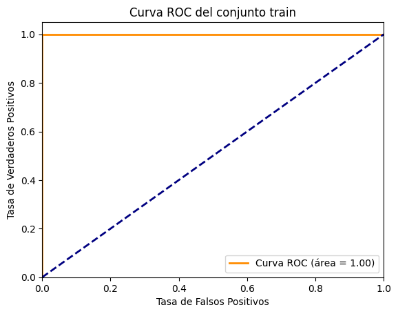
# Graficar la curva ROC para el test
fpr, tpr, thresholds = roc_curve(y_test, y_pred_proba_test)
roc_auc = auc(fpr, tpr)
plt.figure()
plt.plot(fpr, tpr, color='darkorange', lw=2, label='Curva ROC (área = %0.2f)' % roc_auc)
plt.plot([0, 1], [0, 1], color='navy', lw=2, linestyle='--')
plt.xlim([0.0, 1.0])
plt.ylim([0.0, 1.05])
plt.xlabel('Tasa de Falsos Positivos')
plt.ylabel('Tasa de Verdaderos Positivos')
plt.title('Curva ROC del conjunto test')
plt.legend(loc="lower right")
plt.show()

Modelo de Máquina de Soporte Vectorial#
Con
kernel='linear':
from sklearn.metrics import (
accuracy_score,
classification_report,
confusion_matrix,
f1_score,
recall_score,
roc_auc_score,
)
from sklearn.model_selection import GridSearchCV
from sklearn.pipeline import make_pipeline
from sklearn.svm import LinearSVC
# =========================================================================
# 2. CONSTRUCCIÓN DEL PIPELINE COMPLETO MEDIANTE MAKE_PIPELINE (SVM LINEAL)
# =========================================================================
# Nota: Para SVM, el StandardScaler es obligatorio ya que el algoritmo busca
# maximizar el margen basándose en distancias geométricas.
pipeline_svc = make_pipeline(
preprocesador_global,
IterativeImputer(random_state=42, max_iter=10),
StandardScaler(),
LinearSVC(
dual='auto', # Optimización matemática automática para la convergencia del solver
random_state=42,
max_iter=10000
)
)
# Malla de hiperparámetros adaptada con el prefijo oficial 'linearsvc__'
param_grid = {
'linearsvc__C': [0.001, 0.01, 0.1, 1, 10, 100, 1000],
'linearsvc__class_weight': [None, 'balanced'],
}
# =========================================================================
# 3. BÚSQUEDA EN REJILLA CON VALIDACIÓN CRUZADA (GRID SEARCH CV)
# =========================================================================
grid_search_kl = GridSearchCV(
estimator=pipeline_svc,
param_grid=param_grid,
scoring='roc_auc',
cv=5,
n_jobs=-1,
verbose=1,
)
# Entrenamos la rejilla con la data cruda que ya está en memoria
grid_search_kl.fit(X_train, y_train)
# Extraemos el mejor pipeline ganador completo
mejor_pipeline_svc = grid_search_kl.best_estimator_
# Extraemos la desviación estándar del proceso de CV usando el índice ganador
indice_ganador = grid_search_kl.best_index_
desv_estandar_cv = grid_search_kl.cv_results_['std_test_score'][indice_ganador]
# =========================================================================
# 4. EVALUACIÓN UTILIZANDO EL PIPELINE EN TRAIN Y TEST (UMBRAL 0.50)
# =========================================================================
# --- Evaluación en el conjunto de Entrenamiento (Train) ---
y_pred_train = mejor_pipeline_svc.predict(X_train)
# 🌟 CORRECCIÓN: LinearSVC requiere usar decision_function en lugar de predict_proba
y_scores_train = mejor_pipeline_svc.decision_function(X_train)
roc_auc_train = roc_auc_score(y_train, y_scores_train)
accuracy_train = accuracy_score(y_train, y_pred_train)
recall_train = recall_score(y_train, y_pred_train)
f1_train = f1_score(y_train, y_pred_train)
# --- Evaluación en el conjunto de Prueba (Test) ---
y_pred_test = mejor_pipeline_svc.predict(X_test)
# 🌟 CORRECCIÓN: Aplicamos lo mismo para el set de prueba
y_scores_test = mejor_pipeline_svc.decision_function(X_test)
roc_auc_test = roc_auc_score(y_test, y_scores_test)
accuracy_test = accuracy_score(y_test, y_pred_test)
recall_test = recall_score(y_test, y_pred_test)
f1_test = f1_score(y_test, y_pred_test)
# =========================================================================
# 5. REPORTE COMPARATIVO DE CONSOLA
# =========================================================================
print("\n" + "=" * 65)
print("=== REPORTE DEL PIPELINE COMPLETO DE CLASIFICACIÓN (SVM LINEAL) ===")
print("=" * 65)
print(f"Mejores Hiperparámetros encontrados:\n{grid_search_kl.best_params_}\n")
print(
f"ROC AUC Promedio (Validación Cruzada): {grid_search_kl.best_score_:.4f}"
)
print(f"Desviación ROC AUC (Validación Cruzada): ±{desv_estandar_cv:.4f}\n")
print("-" * 65)
print("📈 RENDIMIENTO EN EL CONJUNTO DE ENTRENAMIENTO (TRAIN)")
print("-" * 65)
print(f"ROC AUC (Train): {roc_auc_train:.4f}")
print(f"Exactitud (Accuracy en Train): {accuracy_train * 100:.2f}%")
print(f"Recall (Sensibilidad en Train): {recall_train * 100:.2f}%")
print(f"F1-Score (Métrica F1 en Train): {f1_train * 100:.2f}%\n")
print("-" * 65)
print("📉 RENDIMIENTO EN EL CONJUNTO DE PRUEBA (TEST)")
print("-" * 65)
print(f"ROC AUC Final (Test): {roc_auc_test:.4f}")
print(f"Exactitud Final (Accuracy en Test): {accuracy_test * 100:.2f}%")
print(f"Recall Final (Sensibilidad en Test): {recall_test * 100:.2f}%")
print(f"F1-Score Final (Métrica F1 en Test): {f1_test * 100:.2f}%\n")
print("--- MATRIZ DE CONFUSIÓN (TRAIN) ---")
print(confusion_matrix(y_train, y_pred_train))
print("\n--- MATRIZ DE CONFUSIÓN DE REFERENCIA (TEST - UMBRAL 0.50) ---")
print(confusion_matrix(y_test, y_pred_test))
print("\n--- REPORTE DE CLASIFICACIÓN DETALLADO (TEST) ---")
print(
classification_report(
y_test, y_pred_test, target_names=['Rechazado (-)', 'Aprobado (+)']
)
)
Fitting 5 folds for each of 14 candidates, totalling 70 fits
=================================================================
=== REPORTE DEL PIPELINE COMPLETO DE CLASIFICACIÓN (SVM LINEAL) ===
=================================================================
Mejores Hiperparámetros encontrados:
{'linearsvc__C': 0.1, 'linearsvc__class_weight': None}
ROC AUC Promedio (Validación Cruzada): 0.9191
Desviación ROC AUC (Validación Cruzada): ±0.0228
-----------------------------------------------------------------
📈 RENDIMIENTO EN EL CONJUNTO DE ENTRENAMIENTO (TRAIN)
-----------------------------------------------------------------
ROC AUC (Train): 0.9344
Exactitud (Accuracy en Train): 87.14%
Recall (Sensibilidad en Train): 89.43%
F1-Score (Métrica F1 en Train): 86.11%
-----------------------------------------------------------------
📉 RENDIMIENTO EN EL CONJUNTO DE PRUEBA (TEST)
-----------------------------------------------------------------
ROC AUC Final (Test): 0.9578
Exactitud Final (Accuracy en Test): 87.68%
Recall Final (Sensibilidad en Test): 88.52%
F1-Score Final (Métrica F1 en Test): 86.40%
--- MATRIZ DE CONFUSIÓN (TRAIN) ---
[[261 45]
[ 26 220]]
--- MATRIZ DE CONFUSIÓN DE REFERENCIA (TEST - UMBRAL 0.50) ---
[[67 10]
[ 7 54]]
--- REPORTE DE CLASIFICACIÓN DETALLADO (TEST) ---
precision recall f1-score support
Rechazado (-) 0.91 0.87 0.89 77
Aprobado (+) 0.84 0.89 0.86 61
accuracy 0.88 138
macro avg 0.87 0.88 0.88 138
weighted avg 0.88 0.88 0.88 138
Hagamos la curva de ROC de
SVCcon el kernel lineal
import matplotlib.pyplot as plt
from sklearn.metrics import auc, roc_curve
# =========================================================================
# GRAFICAR LA CURVA ROC PARA EL CONJUNTO DE ENTRENAMIENTO (TRAIN)
# =========================================================================
# 🌟 CORRECCIÓN CRUCIAL: Usamos y_scores_train (distancias del hiperplano) en lugar de las predicciones binarias
fpr_train, tpr_train, thresholds_train = roc_curve(y_train, y_scores_train)
roc_auc_train_curve = auc(fpr_train, tpr_train)
plt.figure(figsize=(7, 5))
plt.plot(
fpr_train,
tpr_train,
color='darkorange',
lw=2,
label='Curva ROC Train (Área = %0.4f)' % roc_auc_train_curve,
)
plt.plot(
[0, 1], [0, 1], color='navy', lw=2, linestyle='--'
) # Línea de predicción aleatoria
# Configuración estética del gráfico
plt.xlim([0.0, 1.0])
plt.ylim([0.0, 1.05])
plt.xlabel('Tasa de Falsos Positivos (1 - Especificidad)')
plt.ylabel('Tasa de Verdaderos Positivos (Sensibilidad)')
plt.title('Curva ROC - Conjunto de Entrenamiento (SVM Lineal)')
plt.legend(loc="lower right")
plt.grid(True, linestyle='--', alpha=0.6)
plt.show()

# Graficar la curva ROC para el test
fpr, tpr, thresholds = roc_curve(y_test, y_scores_test)
roc_auc = auc(fpr, tpr)
plt.figure()
plt.plot(fpr, tpr, color='darkorange', lw=2, label='Curva ROC (área = %0.2f)' % roc_auc)
plt.plot([0, 1], [0, 1], color='navy', lw=2, linestyle='--')
plt.xlim([0.0, 1.0])
plt.ylim([0.0, 1.05])
plt.xlabel('Tasa de Falsos Positivos')
plt.ylabel('Tasa de Verdaderos Positivos')
plt.title('Curva ROC del conjunto test')
plt.legend(loc="lower right")
plt.show()

Modelo Random Forest#
Encontremos los mejores parámetros
from sklearn.ensemble import RandomForestClassifier
from sklearn.metrics import (
accuracy_score,
classification_report,
confusion_matrix,
f1_score,
recall_score,
roc_auc_score,
)
from sklearn.model_selection import GridSearchCV
from sklearn.pipeline import make_pipeline
# =========================================================================
# 2. CONSTRUCCIÓN DEL PIPELINE COMPLETO MEDIANTE MAKE_PIPELINE (RANDOM FOREST)
# =========================================================================
# Nota: Aunque Random Forest no es sensible a las escalas de las variables,
# mantenemos el StandardScaler para asegurar la compatibilidad con el preprocesador global
# y por si deseas comparar modelos bajo el mismo pipeline unificado.
pipeline_rf = make_pipeline(
preprocesador_global,
IterativeImputer(random_state=42, max_iter=10),
StandardScaler(),
RandomForestClassifier(random_state=42, n_jobs=-1),
)
# Malla de hiperparámetros oficial para Random Forest usando make_pipeline
param_grid = {
'randomforestclassifier__n_estimators': [100, 200, 500],
'randomforestclassifier__max_depth': [3, 5, 7, 9],
'randomforestclassifier__min_samples_split': [2, 5, 8],
'randomforestclassifier__min_samples_leaf': [1, 4, 7],
'randomforestclassifier__max_features': ['sqrt', 'log2', None],
'randomforestclassifier__bootstrap': [True, False],
}
# =========================================================================
# 3. BÚSQUEDA EN REJILLA CON VALIDACIÓN CRUZADA (GRID SEARCH CV)
# =========================================================================
grid_search_rf = GridSearchCV(
estimator=pipeline_rf,
param_grid=param_grid,
scoring='roc_auc',
cv=5,
n_jobs=-1,
verbose=1,
)
# Entrenamos la rejilla con la data cruda que ya está en memoria
grid_search_rf.fit(X_train, y_train)
# Extraemos el mejor pipeline ganador completo
mejor_pipeline_rf = grid_search_rf.best_estimator_
# Extraemos la desviación estándar del proceso de CV usando el índice ganador
indice_ganador = grid_search_rf.best_index_
desv_estandar_cv = grid_search_rf.cv_results_['std_test_score'][indice_ganador]
# =========================================================================
# 4. EVALUACIÓN UTILIZANDO EL PIPELINE EN TRAIN Y TEST (UMBRAL 0.50)
# =========================================================================
# --- Evaluación en el conjunto de Entrenamiento (Train) ---
y_pred_train = mejor_pipeline_rf.predict(X_train)
y_pred_proba_train = mejor_pipeline_rf.predict_proba(X_train)[:, 1]
roc_auc_train = roc_auc_score(y_train, y_pred_proba_train)
accuracy_train = accuracy_score(y_train, y_pred_train)
recall_train = recall_score(y_train, y_pred_train)
f1_train = f1_score(y_train, y_pred_train)
# --- Evaluación en el conjunto de Prueba (Test) ---
y_pred_test = mejor_pipeline_rf.predict(X_test)
y_pred_proba_test = mejor_pipeline_rf.predict_proba(X_test)[:, 1]
roc_auc_test = roc_auc_score(y_test, y_pred_proba_test)
accuracy_test = accuracy_score(y_test, y_pred_test)
recall_test = recall_score(y_test, y_pred_test)
f1_test = f1_score(y_test, y_pred_test)
# =========================================================================
# 5. REPORTE COMPARATIVO DE CONSOLA
# =========================================================================
print("\n" + "=" * 65)
print(
"=== REPORTE DEL PIPELINE COMPLETO DE CLASIFICACIÓN (RANDOM FOREST) ==="
)
print("=" * 65)
print(f"Mejores Hiperparámetros encontrados:\n{grid_search_rf.best_params_}\n")
print(f"ROC AUC Promedio (Validación Cruzada): {grid_search_rf.best_score_:.4f}")
print(f"Desviación ROC AUC (Validación Cruzada): ±{desv_estandar_cv:.4f}\n")
print("-" * 65)
print("📈 RENDIMIENTO EN EL CONJUNTO DE ENTRENAMIENTO (TRAIN)")
print("-" * 65)
print(f"ROC AUC (Train): {roc_auc_train:.4f}")
print(f"Exactitud (Accuracy en Train): {accuracy_train * 100:.2f}%")
print(f"Recall (Sensibilidad en Train): {recall_train * 100:.2f}%")
print(f"F1-Score (Métrica F1 en Train): {f1_train * 100:.2f}%\n")
print("-" * 65)
print("📉 RENDIMIENTO EN EL CONJUNTO DE PRUEBA (TEST)")
print("-" * 65)
print(f"ROC AUC Final (Test): {roc_auc_test:.4f}")
print(f"Exactitud Final (Accuracy en Test): {accuracy_test * 100:.2f}%")
print(f"Recall Final (Sensibilidad en Test): {recall_test * 100:.2f}%")
print(f"F1-Score Final (Métrica F1 en Test): {f1_test * 100:.2f}%\n")
print("--- MATRIZ DE CONFUSIÓN (TRAIN) ---")
print(confusion_matrix(y_train, y_pred_train))
print("\n--- MATRIZ DE CONFUSIÓN DE REFERENCIA (TEST - UMBRAL 0.50) ---")
print(confusion_matrix(y_test, y_pred_test))
print("\n--- REPORTE DE CLASIFICACIÓN DETALLADO (TEST) ---")
print(
classification_report(
y_test, y_pred_test, target_names=['Rechazado (-)', 'Aprobado (+)']
)
)
Fitting 5 folds for each of 648 candidates, totalling 3240 fits
=================================================================
=== REPORTE DEL PIPELINE COMPLETO DE CLASIFICACIÓN (RANDOM FOREST) ===
=================================================================
Mejores Hiperparámetros encontrados:
{'randomforestclassifier__bootstrap': False, 'randomforestclassifier__max_depth': 5, 'randomforestclassifier__max_features': 'sqrt', 'randomforestclassifier__min_samples_leaf': 1, 'randomforestclassifier__min_samples_split': 5, 'randomforestclassifier__n_estimators': 500}
ROC AUC Promedio (Validación Cruzada): 0.9317
Desviación ROC AUC (Validación Cruzada): ±0.0181
-----------------------------------------------------------------
📈 RENDIMIENTO EN EL CONJUNTO DE ENTRENAMIENTO (TRAIN)
-----------------------------------------------------------------
ROC AUC (Train): 0.9660
Exactitud (Accuracy en Train): 89.67%
Recall (Sensibilidad en Train): 84.15%
F1-Score (Métrica F1 en Train): 87.90%
-----------------------------------------------------------------
📉 RENDIMIENTO EN EL CONJUNTO DE PRUEBA (TEST)
-----------------------------------------------------------------
ROC AUC Final (Test): 0.9600
Exactitud Final (Accuracy en Test): 86.23%
Recall Final (Sensibilidad en Test): 75.41%
F1-Score Final (Métrica F1 en Test): 82.88%
--- MATRIZ DE CONFUSIÓN (TRAIN) ---
[[288 18]
[ 39 207]]
--- MATRIZ DE CONFUSIÓN DE REFERENCIA (TEST - UMBRAL 0.50) ---
[[73 4]
[15 46]]
--- REPORTE DE CLASIFICACIÓN DETALLADO (TEST) ---
precision recall f1-score support
Rechazado (-) 0.83 0.95 0.88 77
Aprobado (+) 0.92 0.75 0.83 61
accuracy 0.86 138
macro avg 0.87 0.85 0.86 138
weighted avg 0.87 0.86 0.86 138
# Graficar la curva ROC para el train
fpr, tpr, thresholds = roc_curve(y_train, y_pred_proba_train)
roc_auc = auc(fpr, tpr)
plt.figure()
plt.plot(fpr, tpr, color='darkorange', lw=2, label='Curva ROC (área = %0.2f)' % roc_auc)
plt.plot([0, 1], [0, 1], color='navy', lw=2, linestyle='--')
plt.xlim([0.0, 1.0])
plt.ylim([0.0, 1.05])
plt.xlabel('Tasa de Falsos Positivos')
plt.ylabel('Tasa de Verdaderos Positivos')
plt.title('Curva ROC del conjunto train')
plt.legend(loc="lower right")
plt.show()
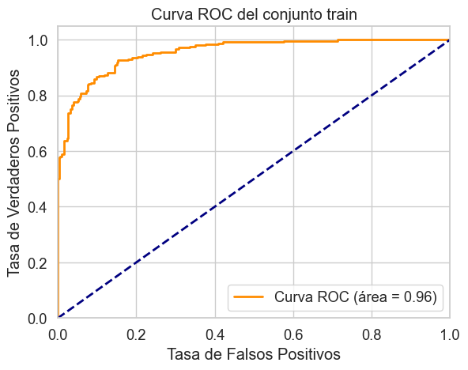
# Graficar la curva ROC para el test
fpr, tpr, thresholds = roc_curve(y_test, y_pred_proba_test)
roc_auc = auc(fpr, tpr)
plt.figure()
plt.plot(fpr, tpr, color='darkorange', lw=2, label='Curva ROC (área = %0.2f)' % roc_auc)
plt.plot([0, 1], [0, 1], color='navy', lw=2, linestyle='--')
plt.xlim([0.0, 1.0])
plt.ylim([0.0, 1.05])
plt.xlabel('Tasa de Falsos Positivos')
plt.ylabel('Tasa de Verdaderos Positivos')
plt.title('Curva ROC del conjunto test')
plt.legend(loc="lower right")
plt.show()
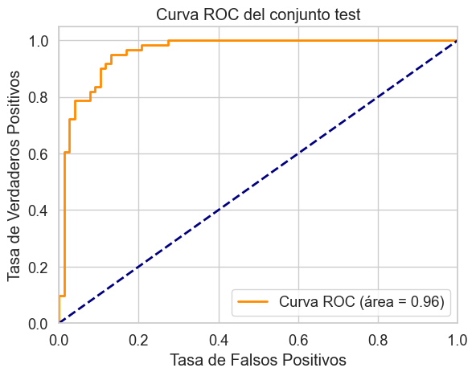
Ahora, miremo la importancia de las variables predictoras
# =========================================================================
# EXTRACCIÓN DE IMPORTANCIA DE LAS CARACTERÍSTICAS (FEATURE IMPORTANCE)
# =========================================================================
# 1. Extraer el modelo RandomForest del pipeline ganador
# Usamos 'mejor_pipeline_rf' que fue el objeto que guardó el GridSearchCV
modelo_entrenado = mejor_pipeline_rf.named_steps['randomforestclassifier']
# 2. Extraer los nombres reales de las columnas después del preprocesamiento
# Recuperamos los nombres del ColumnTransformer para que coincidan con el modelo
preprocesador_global_fit = mejor_pipeline_rf.named_steps['columntransformer']
nombres_caracteristicas = preprocesador_global_fit.get_feature_names_out()
# 3. Limpiar los nombres de las columnas para remover los prefijos 'cat__' y 'remainder__'
# Esto hace que el reporte final impreso sea mucho más legible para el negocio
nombres_limpios = [
nombre.replace('cat__', '').replace('remainder__', '')
for nombre in nombres_caracteristicas
]
# 4. Construir el DataFrame con la importancia de los predictores
importancia_predictores = pd.DataFrame(
{'predictor': nombres_limpios, 'importancia': modelo_entrenado.feature_importances_}
).sort_values('importancia', ascending=False)
# 5. Imprimir el reporte comparativo en la consola
print("Importancia de los predictores en el modelo (Random Forest)")
print("-----------------------------------------------------------")
print(importancia_predictores.to_string(index=False))
Importancia de los predictores en el modelo (Random Forest)
-----------------------------------------------------------
predictor importancia
DeudaAnterior_t 0.362749
PuntajeCrediticio 0.155177
Empleado_t 0.117617
AniosEmpleo 0.106795
Ingreso 0.101555
Deuda 0.055182
Edad 0.025833
Educacion_ff 0.017319
Educacion_x 0.013370
Casado_y 0.010088
Educacion_cc 0.006266
Educacion_q 0.004798
Ciudadano_p 0.004778
Educacion_i 0.003398
Ciudadano_s 0.003262
Sexo_b 0.003213
Educacion_k 0.002814
Educacion_c 0.001915
Educacion_w 0.001196
Educacion_d 0.001051
Educacion_e 0.000674
Educacion_m 0.000554
Educacion_j 0.000397
Modelo de XGBoost#
from sklearn.metrics import (
accuracy_score,
classification_report,
confusion_matrix,
f1_score,
recall_score,
roc_auc_score,
)
from sklearn.model_selection import GridSearchCV
from sklearn.pipeline import make_pipeline
from xgboost import XGBClassifier
# =========================================================================
# 2. CONSTRUCCIÓN DEL PIPELINE COMPLETO MEDIANTE MAKE_PIPELINE (XGBOOST)
# =========================================================================
pipeline_xgb = make_pipeline(
preprocesador_global,
IterativeImputer(random_state=42, max_iter=10),
StandardScaler(),
# Inicializamos XGBClassifier configurando la semilla aleatoria
XGBClassifier(random_state=42, n_jobs=-1, eval_metric='logloss'),
)
# Malla de hiperparámetros oficial para XGBoost usando make_pipeline
param_grid = {
'xgbclassifier__n_estimators': [100, 300, 500],
'xgbclassifier__max_depth': [3, 6, 9],
'xgbclassifier__learning_rate': [0.01, 0.1, 0.2],
'xgbclassifier__subsample': [0.8, 1.0],
'xgbclassifier__colsample_bytree': [0.8, 1.0],
'xgbclassifier__min_child_weight': [1, 5],
}
# =========================================================================
# 3. BÚSQUEDA EN REJILLA CON VALIDACIÓN CRUZADA (GRID SEARCH CV)
# =========================================================================
grid_search_xgb = GridSearchCV(
estimator=pipeline_xgb,
param_grid=param_grid,
scoring='roc_auc',
cv=5,
n_jobs=-1,
verbose=1,
)
# Entrenamos la rejilla con la data cruda que ya está en memoria
grid_search_xgb.fit(X_train, y_train)
# Extraemos el mejor pipeline ganador completo
mejor_pipeline_xgb = grid_search_xgb.best_estimator_
# Extraemos la desviación estándar del proceso de CV usando el índice ganador
indice_ganador = grid_search_xgb.best_index_
desv_estandar_cv = grid_search_xgb.cv_results_['std_test_score'][indice_ganador]
# =========================================================================
# 4. EVALUACIÓN UTILIZANDO EL PIPELINE EN TRAIN Y TEST (UMBRAL 0.50)
# =========================================================================
# --- Evaluación en el conjunto de Entrenamiento (Train) ---
y_pred_train = mejor_pipeline_xgb.predict(X_train)
y_pred_proba_train = mejor_pipeline_xgb.predict_proba(X_train)[:, 1]
roc_auc_train = roc_auc_score(y_train, y_pred_proba_train)
accuracy_train = accuracy_score(y_train, y_pred_train)
recall_train = recall_score(y_train, y_pred_train)
f1_train = f1_score(y_train, y_pred_train)
# --- Evaluación en el conjunto de Prueba (Test) ---
y_pred_test = mejor_pipeline_xgb.predict(X_test)
y_pred_proba_test = mejor_pipeline_xgb.predict_proba(X_test)[:, 1]
roc_auc_test = roc_auc_score(y_test, y_pred_proba_test)
accuracy_test = accuracy_score(y_test, y_pred_test)
recall_test = recall_score(y_test, y_pred_test)
f1_test = f1_score(y_test, y_pred_test)
# =========================================================================
# 5. REPORTE COMPARATIVO DE CONSOLA
# =========================================================================
print("\n" + "=" * 65)
print("=== REPORTE DEL PIPELINE COMPLETO DE CLASIFICACIÓN (XGBOOST) ===")
print("=" * 65)
print(f"Mejores Hiperparámetros encontrados:\n{grid_search_xgb.best_params_}\n")
print(f"ROC AUC Promedio (Validación Cruzada): {grid_search_xgb.best_score_:.4f}")
print(f"Desviación ROC AUC (Validación Cruzada): ±{desv_estandar_cv:.4f}\n")
print("-" * 65)
print("📈 RENDIMIENTO EN EL CONJUNTO DE ENTRENAMIENTO (TRAIN)")
print("-" * 65)
print(f"ROC AUC (Train): {roc_auc_train:.4f}")
print(f"Exactitud (Accuracy en Train): {accuracy_train * 100:.2f}%")
print(f"Recall (Sensibilidad en Train): {recall_train * 100:.2f}%")
print(f"F1-Score (Métrica F1 en Train): {f1_train * 100:.2f}%\n")
print("-" * 65)
print("📉 RENDIMIENTO EN EL CONJUNTO DE PRUEBA (TEST)")
print("-" * 65)
print(f"ROC AUC Final (Test): {roc_auc_test:.4f}")
print(f"Exactitud Final (Accuracy en Test): {accuracy_test * 100:.2f}%")
print(f"Recall Final (Sensibilidad en Test): {recall_test * 100:.2f}%")
print(f"F1-Score Final (Métrica F1 en Test): {f1_test * 100:.2f}%\n")
print("--- MATRIZ DE CONFUSIÓN (TRAIN) ---")
print(confusion_matrix(y_train, y_pred_train))
print("\n--- MATRIZ DE CONFUSIÓN DE REFERENCIA (TEST - UMBRAL 0.50) ---")
print(confusion_matrix(y_test, y_pred_test))
print("\n--- REPORTE DE CLASIFICACIÓN DETALLADO (TEST) ---")
print(
classification_report(
y_test, y_pred_test, target_names=['Rechazado (-)', 'Aprobado (+)']
)
)
Fitting 5 folds for each of 216 candidates, totalling 1080 fits
=================================================================
=== REPORTE DEL PIPELINE COMPLETO DE CLASIFICACIÓN (XGBOOST) ===
=================================================================
Mejores Hiperparámetros encontrados:
{'xgbclassifier__colsample_bytree': 0.8, 'xgbclassifier__learning_rate': 0.01, 'xgbclassifier__max_depth': 3, 'xgbclassifier__min_child_weight': 5, 'xgbclassifier__n_estimators': 300, 'xgbclassifier__subsample': 0.8}
ROC AUC Promedio (Validación Cruzada): 0.9340
Desviación ROC AUC (Validación Cruzada): ±0.0242
-----------------------------------------------------------------
📈 RENDIMIENTO EN EL CONJUNTO DE ENTRENAMIENTO (TRAIN)
-----------------------------------------------------------------
ROC AUC (Train): 0.9559
Exactitud (Accuracy en Train): 88.41%
Recall (Sensibilidad en Train): 85.77%
F1-Score (Métrica F1 en Train): 86.83%
-----------------------------------------------------------------
📉 RENDIMIENTO EN EL CONJUNTO DE PRUEBA (TEST)
-----------------------------------------------------------------
ROC AUC Final (Test): 0.9602
Exactitud Final (Accuracy en Test): 86.96%
Recall Final (Sensibilidad en Test): 81.97%
F1-Score Final (Métrica F1 en Test): 84.75%
--- MATRIZ DE CONFUSIÓN (TRAIN) ---
[[277 29]
[ 35 211]]
--- MATRIZ DE CONFUSIÓN DE REFERENCIA (TEST - UMBRAL 0.50) ---
[[70 7]
[11 50]]
--- REPORTE DE CLASIFICACIÓN DETALLADO (TEST) ---
precision recall f1-score support
Rechazado (-) 0.86 0.91 0.89 77
Aprobado (+) 0.88 0.82 0.85 61
accuracy 0.87 138
macro avg 0.87 0.86 0.87 138
weighted avg 0.87 0.87 0.87 138
# Graficar la curva ROC para el train
fpr, tpr, thresholds = roc_curve(y_train, y_pred_proba_train)
roc_auc = auc(fpr, tpr)
plt.figure()
plt.plot(fpr, tpr, color='darkorange', lw=2, label='Curva ROC (área = %0.2f)' % roc_auc)
plt.plot([0, 1], [0, 1], color='navy', lw=2, linestyle='--')
plt.xlim([0.0, 1.0])
plt.ylim([0.0, 1.05])
plt.xlabel('Tasa de Falsos Positivos')
plt.ylabel('Tasa de Verdaderos Positivos')
plt.title('Curva ROC del conjunto train')
plt.legend(loc="lower right")
plt.show()
# Graficar la curva ROC para el test
fpr, tpr, thresholds = roc_curve(y_test, y_pred_proba_test)
roc_auc = auc(fpr, tpr)
plt.figure()
plt.plot(fpr, tpr, color='darkorange', lw=2, label='Curva ROC (área = %0.2f)' % roc_auc)
plt.plot([0, 1], [0, 1], color='navy', lw=2, linestyle='--')
plt.xlim([0.0, 1.0])
plt.ylim([0.0, 1.05])
plt.xlabel('Tasa de Falsos Positivos')
plt.ylabel('Tasa de Verdaderos Positivos')
plt.title('Curva ROC del conjunto test')
plt.legend(loc="lower right")
plt.show()
Ahora, miremos las variables predictoras más relevantes
# =========================================================================
# EXTRACCIÓN DE IMPORTANCIA DE LAS CARACTERÍSTICAS (FEATURE IMPORTANCE - XGBOOST)
# =========================================================================
# 1. Extraer el modelo XGBoost del pipeline ganador
# Usamos 'mejor_pipeline_xgb' que fue el objeto guardado por el GridSearchCV
modelo_entrenado_xgb = mejor_pipeline_xgb.named_steps['xgbclassifier']
# 2. Extraer los nombres reales de las columnas después del preprocesamiento
preprocesador_global_fit = mejor_pipeline_xgb.named_steps['columntransformer']
nombres_caracteristicas = preprocesador_global_fit.get_feature_names_out()
# 3. Limpiar los nombres de las columnas removiendo los prefijos 'cat__' y 'remainder__'
nombres_limpios = [
nombre.replace('cat__', '').replace('remainder__', '')
for nombre in nombres_caracteristicas
]
# 4. Construir el DataFrame con la importancia de los predictores
importancia_predictores_xgb = pd.DataFrame(
{'predictor': nombres_limpios, 'importancia': modelo_entrenado_xgb.feature_importances_}
).sort_values('importancia', ascending=False)
# 5. Imprimir el reporte comparativo en la consola
print("Importancia de los predictores en el modelo (XGBoost)")
print("-----------------------------------------------------")
print(importancia_predictores_xgb.to_string(index=False))
Importancia de los predictores en el modelo (XGBoost)
-----------------------------------------------------
predictor importancia
DeudaAnterior_t 0.475573
PuntajeCrediticio 0.128544
Empleado_t 0.124064
Ingreso 0.057895
Educacion_ff 0.042597
Casado_y 0.040638
Deuda 0.036546
AniosEmpleo 0.033986
Edad 0.018218
Sexo_b 0.018109
Educacion_c 0.012523
Educacion_q 0.011307
Educacion_m 0.000000
Educacion_k 0.000000
Educacion_w 0.000000
Educacion_x 0.000000
Educacion_j 0.000000
Educacion_i 0.000000
Ciudadano_p 0.000000
Ciudadano_s 0.000000
Educacion_e 0.000000
Educacion_d 0.000000
Educacion_cc 0.000000
Comparación de los modelos#
En esta sección se realizará un análisis completo para escoger el mejor modelo.
import matplotlib.pyplot as plt
import pandas as pd
import seaborn as sns
# =========================================================================
# 1. RECOLECCIÓN DE LOS SCORES DE ROC AUC DE VALIDACIÓN CRUZADA (5 FOLDS)
# =========================================================================
# Extraemos los 5 scores de cada GridSearch usando el índice ganador (.best_index_)
# 1. Regresión Logística
idx_lr = grid_search_lr.best_index_
f_lr = [
grid_search_lr.cv_results_[f'split{i}_test_score'][idx_lr] for i in range(5)
]
# 2. K-Nearest Neighbors (KNN)
# Nota: Si tu GridSearch de KNN se llamó 'grid_search' cámbialo aquí, asumimos el del bloque KNN
idx_knn = grid_search_knn.best_index_ # Ajustar a la variable de tu rejilla KNN si cambió
f_knn = [
grid_search_knn.cv_results_[f'split{i}_test_score'][idx_knn] for i in range(5)
]
# 3. SVM Lineal (LinearSVC)
idx_svc = grid_search_kl.best_index_
f_svc = [
grid_search_kl.cv_results_[f'split{i}_test_score'][idx_svc] for i in range(5)
]
# 4. Random Forest
idx_rf = grid_search_rf.best_index_
f_rf = [
grid_search_rf.cv_results_[f'split{i}_test_score'][idx_rf] for i in range(5)
]
# 5. XGBoost
idx_xgb = grid_search_xgb.best_index_
f_xgb = [
grid_search_xgb.cv_results_[f'split{i}_test_score'][idx_xgb] for i in range(5)
]
# =========================================================================
# 2. CONSTRUCCIÓN DEL DATAFRAME PARA SEABORN
# =========================================================================
data_grafico = {
'Regresión Logística': f_lr,
'KNN Classifier': f_knn,
'SVM Lineal': f_svc,
'Random Forest': f_rf,
'XGBoost': f_xgb,
}
df_boxplot = pd.DataFrame(data_grafico)
# =========================================================================
# 3. DISEÑO Y RENDERIZADO DEL DIAGRAMA DE CAJAS
# =========================================================================
plt.figure(figsize=(12, 6))
sns.set_theme(style="whitegrid")
# Graficamos horizontalmente. Usamos una paleta secuencial/divergente atractiva
ax = sns.boxplot(
data=df_boxplot,
orient="h",
palette="vlag",
linewidth=1.8,
flierprops={"marker": "o", "markerfacecolor": "red", "markersize": 6},
)
# Añadimos los puntos (stripplot) para ver el comportamiento de los 5 pliegues
sns.stripplot(
data=df_boxplot, orient="h", color="black", alpha=0.6, size=6, jitter=0.08
)
# Títulos y formato del gráfico para clasificación
plt.title(
'Comparación de Estabilidad de Modelos de Clasificación Bancaria\nDistribución de la métrica ROC AUC en Validación Cruzada ($K=5$)',
fontsize=14,
pad=15,
weight='bold',
)
plt.xlabel('Área Bajo la Curva ROC (ROC AUC Score)', fontsize=12, labelpad=10)
plt.ylabel('Algoritmos / Modelos Evaluados', fontsize=12)
# Fijamos límites lógicos en el eje X para apreciar mejor las diferencias entre modelos
min_auc = df_boxplot.min().min() - 0.02
plt.xlim([max(0.0, min_auc), 1.01])
plt.tight_layout()
plt.show()
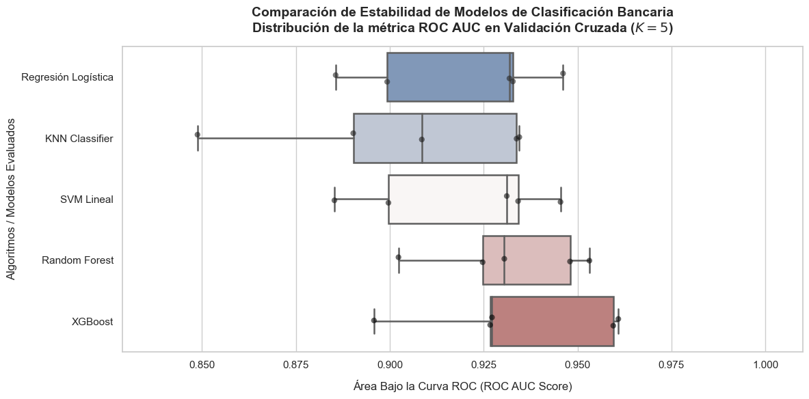
Mejor Modelo XGBoost#
from sklearn.metrics import confusion_matrix, roc_curve
import numpy as np
import pandas as pd
# =========================================================================
# 1. EXTRAER PROBABILIDADES DEL MODELO GANADOR (XGBOOST)
# =========================================================================
# Usamos el pipeline completo de XGBoost para predecir sobre los datos crudos de prueba
y_pred_proba_xgb = mejor_pipeline_xgb.predict_proba(X_test)[:, 1]
# Calculamos los componentes de la curva ROC necesarios para los umbrales
fpr, tpr, thresholds = roc_curve(y_test, y_pred_proba_xgb)
# =========================================================================
# MÉTODO 1: ÍNDICE DE YOUDEN (Equilibrio Matemático Perfecto)
# =========================================================================
# Maximiza: Sensibilidad + Especificidad - 1
valores_j = tpr - fpr
umbral_youden = thresholds[np.argmax(valores_j)]
# =========================================================================
# MÉTODO 2: CONTROL DE RIESGO ESTRICTO (Tasa de Falsos Positivos <= 5%)
# =========================================================================
# Ideal si el banco está en una época de alta morosidad y quiere cuidar el capital
indice_conservador = np.where(fpr <= 0.05)[0][-1]
umbral_conservador = thresholds[indice_conservador]
# =========================================================================
# MÉTODO 3: OPTIMIZACIÓN FINANCIERA (Maximizar Ganancias Netas)
# =========================================================================
# Supongamos las siguientes métricas de negocio del banco:
ganancia_bueno = 200 # Lo que gana el banco en intereses por un cliente cumplido
perdida_malo = -1000 # Lo que pierde el banco si aprueba a un cliente que cae en default
utilidades = []
# Evaluamos el impacto financiero de cada umbral posible en la curva
for u in thresholds:
predicciones_temporales = (y_pred_proba_xgb >= u).astype(int)
tn, fp, fn, tp = confusion_matrix(y_test, predicciones_temporales).ravel()
# Ecuación de utilidad del portafolio
utilidad_neta = (tp * ganancia_bueno) + (fp * perdida_malo)
utilidades.append(utilidad_neta)
umbral_financiero = thresholds[np.argmax(utilidades)]
max_utilidad = max(utilidades)
# =========================================================================
# REPORTE DE DECISIONES PARA EL COMITÉ DE RIESGOS
# =========================================================================
print("="*65)
print("=== CÁLCULO DE UMBRALES ÓPTIMOS - MODELO: XGBOOST ===")
print("="*65)
print(f"1. Umbral Estadístico (Youden): {umbral_youden:.4f}")
print(" (Balance teórico ideal entre aprobación y rechazo)")
print("-" * 65)
print(f"2. Umbral de Riesgo Estricto (FPR<=5%): {umbral_conservador:.4f}")
print(" (Para escenarios de crisis: restringe fuertemente los falsos positivos)")
print("-" * 65)
print(f"3. Umbral Financiero Optimizado: {umbral_financiero:.4f}")
print(f" (Maximiza la rentabilidad total. Utilidad proyectada: ${max_utilidad:,.2f} USD)")
print("="*65)
=================================================================
=== CÁLCULO DE UMBRALES ÓPTIMOS - MODELO: XGBOOST ===
=================================================================
1. Umbral Estadístico (Youden): 0.3972
(Balance teórico ideal entre aprobación y rechazo)
-----------------------------------------------------------------
2. Umbral de Riesgo Estricto (FPR<=5%): 0.5730
(Para escenarios de crisis: restringe fuertemente los falsos positivos)
-----------------------------------------------------------------
3. Umbral Financiero Optimizado: 0.6507
(Maximiza la rentabilidad total. Utilidad proyectada: $6,800.00 USD)
=================================================================
from sklearn.metrics import classification_report, confusion_matrix
umbrales_a_evaluar = {
'Estadístico (Youden)': 0.3972,
'Riesgo Estricto (FPR <= 5%)': 0.5730,
'Financiero Optimizado': 0.6507
}
for nombre, u in umbrales_a_evaluar.items():
# Aplicar el umbral a las probabilidades de XGBoost que ya tienes en memoria
predicciones_con_umbral = (y_pred_proba_xgb >= u).astype(int)
tn, fp, fn, tp = confusion_matrix(y_test, predicciones_con_umbral).ravel()
utilidad_real = (tp * 200) + (fp * -1000)
print("\n" + "="*60)
print(f"📊 IMPACTO EN NEGOCIO - UMBRAL: {nombre} ({u})")
print("="*60)
print(f"💵 Utilidad Neta Proyectada: ${utilidad_real:,.2f} USD")
print(f"✅ Clientes buenos correctamente aprobados (VP): {tp}")
print(f"❌ Clientes malos aprobados por error (FP): {fp} <-- ¡Los que cuestan $1000!")
print(f"🚫 Solicitudes rechazadas en total (FN + TN): {fn + tn}")
print("-" * 60)
print(classification_report(y_test, predicciones_con_umbral, target_names=['Rechazado', 'Aprobado']))
============================================================
📊 IMPACTO EN NEGOCIO - UMBRAL: Estadístico (Youden) (0.3972)
============================================================
💵 Utilidad Neta Proyectada: $1,400.00 USD
✅ Clientes buenos correctamente aprobados (VP): 57
❌ Clientes malos aprobados por error (FP): 10 <-- ¡Los que cuestan $1000!
🚫 Solicitudes rechazadas en total (FN + TN): 71
------------------------------------------------------------
precision recall f1-score support
Rechazado 0.94 0.87 0.91 77
Aprobado 0.85 0.93 0.89 61
accuracy 0.90 138
macro avg 0.90 0.90 0.90 138
weighted avg 0.90 0.90 0.90 138
============================================================
📊 IMPACTO EN NEGOCIO - UMBRAL: Riesgo Estricto (FPR <= 5%) (0.573)
============================================================
💵 Utilidad Neta Proyectada: $6,600.00 USD
✅ Clientes buenos correctamente aprobados (VP): 48
❌ Clientes malos aprobados por error (FP): 3 <-- ¡Los que cuestan $1000!
🚫 Solicitudes rechazadas en total (FN + TN): 87
------------------------------------------------------------
precision recall f1-score support
Rechazado 0.85 0.96 0.90 77
Aprobado 0.94 0.79 0.86 61
accuracy 0.88 138
macro avg 0.90 0.87 0.88 138
weighted avg 0.89 0.88 0.88 138
============================================================
📊 IMPACTO EN NEGOCIO - UMBRAL: Financiero Optimizado (0.6507)
============================================================
💵 Utilidad Neta Proyectada: $6,800.00 USD
✅ Clientes buenos correctamente aprobados (VP): 44
❌ Clientes malos aprobados por error (FP): 2 <-- ¡Los que cuestan $1000!
🚫 Solicitudes rechazadas en total (FN + TN): 92
------------------------------------------------------------
precision recall f1-score support
Rechazado 0.82 0.97 0.89 77
Aprobado 0.96 0.72 0.82 61
accuracy 0.86 138
macro avg 0.89 0.85 0.86 138
weighted avg 0.88 0.86 0.86 138
Empaquetamiento de mejor modelo#
import joblib
# Definimos el nombre del archivo binario
nombre_modelo_guardado = "pipeline_risk_xgboost_v1.joblib"
# Guardamos el pipeline completo ganador
joblib.dump(mejor_pipeline_xgb, nombre_modelo_guardado)
print(f"🎉 ¡Modelo empaquetado con éxito! Archivo generado: '{nombre_modelo_guardado}'")
🎉 ¡Modelo empaquetado con éxito! Archivo generado: 'pipeline_risk_xgboost_v1.joblib'
Cargar y Predecir en Producción (Entorno de Servidor/API)
import joblib
import pandas as pd
import numpy as np
# -------------------------------------------------------------------------
# A. CARGAR EL MODELO EMPAQUETADO (Se hace una sola vez al levantar el servidor)
# -------------------------------------------------------------------------
modelo_produccion = joblib.load("pipeline_risk_xgboost_v1.joblib")
# Definimos el umbral financiero óptimo calculado previamente
UMBRAL_FINANCIERO = 0.6507
# -------------------------------------------------------------------------
# B. RECIBIR NUEVOS DATOS (Simulación de una nueva solicitud de crédito)
# -------------------------------------------------------------------------
# Llegan datos crudos de nuevos clientes (pueden venir con nulos o categorías nuevas)
datos_nuevos_clientes = pd.DataFrame({
'Sexo': ['b', 'a'],
'Edad': [32.5, np.NaN], # El IterativeImputer empaquetado resolverá este nulo
'Deuda': [4.25, 1.75],
'Casado': ['u', 'y'],
'Educacion': ['c', 'q'],
'AniosEmpleo': [2.1, 0.5],
'DeudaAnterior': ['t', 'f'],
'Empleado': ['t', 'f'],
'PuntajeCrediticio': [6, 0],
'Ciudadano': ['g', 'g'],
'Ingreso': [1200, 0]
})
# -------------------------------------------------------------------------
# C. PROCESAR Y PREDECIR DE FORMA AUTOMATIZADA
# -------------------------------------------------------------------------
# 1. Extracción de probabilidades de riesgo directas del Pipeline unificado
probabilidades_aprobacion = modelo_produccion.predict_proba(datos_nuevos_clientes)[:, 1]
# 2. Aplicación manual del umbral óptimo de negocio para maximizar la utilidad del banco
decisiones_finales = (probabilidades_aprobacion >= UMBRAL_FINANCIERO).astype(int)
# -------------------------------------------------------------------------
# D. RESULTADO FINAL PARA EL CORE BANCARIO
# -------------------------------------------------------------------------
resultados_scoring = datos_nuevos_clientes.copy()
resultados_scoring['Probabilidad_Score'] = probabilidades_aprobacion
resultados_scoring['Dictamen_Final'] = np.where(decisiones_finales == 1, 'APROBADO ✅', 'RECHAZADO 🚫')
print("\n=== EVALUACIÓN AUTOMÁTICA EN PRODUCCIÓN ===")
print(resultados_scoring[['Edad', 'PuntajeCrediticio', 'Ingreso', 'Probabilidad_Score', 'Dictamen_Final']])
=== EVALUACIÓN AUTOMÁTICA EN PRODUCCIÓN ===
Edad PuntajeCrediticio Ingreso Probabilidad_Score Dictamen_Final
0 32.5 6 1200 0.953913 APROBADO ✅
1 NaN 0 0 0.057025 RECHAZADO 🚫